Harness Engineering: The Definitive Guide Based on Claude Code
A Comprehensive Textbook on AI Agent Infrastructure Design
"The model is the agent. The code is the harness. Build great harnesses. The agent will do the rest."
This textbook is based on reverse engineering and systematic analysis of Claude Code source (~512,664 lines of TypeScript), dissecting every design decision, engineering trade-off, and implementation detail of AI Agent Harness infrastructure in a textbook format. It builds theoretical frameworks on top of code analysis, distilling scattered implementation details into reusable design principles.
Target Audience: AI Engineers, Agent System Architects, researchers interested in LLM application infrastructure.
Prerequisites: TypeScript basics, LLM API experience, fundamental system design concepts.
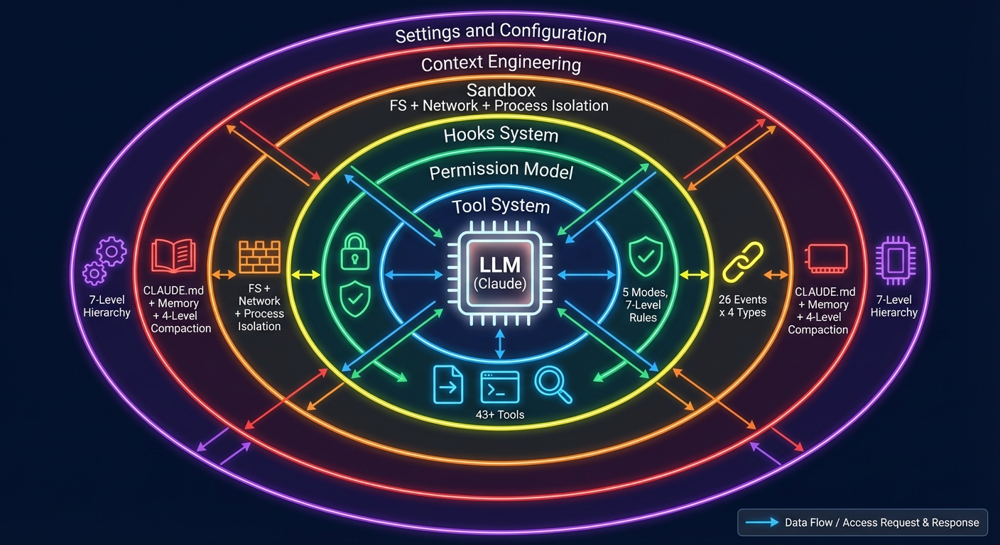
Figure 0-1: Harness Engineering Architecture Overview — The LLM is surrounded by six layers of Harness infrastructure: Tool System (43+), Permission Model (5 modes), Hooks System (26 events × 4 types), Sandbox (FS + network + process isolation), Context Engineering (CLAUDE.md + memory + 4-level compaction), Settings & Configuration (7-level hierarchy).Table of Contents
- Chapter 1: What is Harness Engineering?
- Chapter 2: Claude Code Architecture Overview
- Chapter 3: Agent Loop — Heart of the Harness
- Chapter 4: Tool System — The Agent's Hands
- Chapter 5: Permission Model — Constraint Architecture
- Chapter 6: Hooks System — Lifecycle Extensibility
- Chapter 7: Sandbox & Security — The Safety Net
- Chapter 8: Context Engineering — The Art of Information Management
- Chapter 9: Settings & Configuration — Harness Tunability
- Chapter 10: MCP Integration — Extending the Harness Boundary
- Chapter 11: Sub-Agent System — Multi-Agent Orchestration
- Chapter 12: Skills & Plugins — Extension Ecosystem
- Chapter 13: Build Your Own Harness — Practical Guide
- Chapter 14: Advanced Patterns & Design Philosophy
- Chapter 15: Build a Mini Harness from Scratch (Hands-on)
- Chapter 16: Competitor Analysis
- Conclusion: From Reader to Builder
Chapter 1: What is Harness Engineering?
Imagine you need to train a wild horse. You wouldn't just jump on its back — you'd first build fences, prepare reins, and lay out a track. This "infrastructure" isn't the horse itself, but without it, even the best horse is just a wild animal.
AI Agents are the same. The model (LLM) is that horse — powerful but untamed. Harness Engineering is the discipline of building fences, making reins, and laying tracks.
1.1 Definition
Harness Engineering is the discipline of designing environments, constraints, feedback loops, and infrastructure that make AI agents reliable at scale.
The term was formally coined by OpenAI's engineering team in early 2026. They described internal systems with "over one million lines of code, none written by humans" — engineers no longer write code directly, but "design systems that let AI agents write code reliably."
A simple analogy:
┌─────────────────────────────────────────────────┐
│ │
│ Agent = Model (LLM) │
│ Harness = Everything Else │
│ │
│ ┌──────────┐ ┌────────────────────────┐ │
│ │ Claude │ ←── │ Tools, Permissions, │ │
│ │ Opus/ │ ──→ │ Hooks, Sandbox, │ │
│ │ Sonnet │ │ Memory, Settings, │ │
│ │ │ │ MCP, Skills, Agents │ │
│ └──────────┘ └────────────────────────┘ │
│ Model Harness │
│ │
└─────────────────────────────────────────────────┘
1.2 The Three Pillars
To understand Harness Engineering, break it into three pillars. Think of it as building a house: Context Engineering is the foundation (ensuring information is in place), Architectural Constraints are the load-bearing walls (ensuring the structure doesn't collapse), and Entropy Management is the property maintenance (ensuring the house doesn't deteriorate).
mindmap
root((Harness Engineering))
Context Engineering
Static Context
CLAUDE.md
AGENTS.md
Design Docs
Dynamic Context
Logs & Metrics
Git State
CI/CD Status
Context Compression
4-Level Pipeline
On-Demand Loading
Memory System
Architectural Constraints
Permission Model
5 Modes
7-Level Rule Hierarchy
AI Classifier
Tool Constraints
Schema Validation
Concurrency Safety Flags
Deferred Loading
Security Boundaries
Sandbox Isolation
Hardcoded Denials
Defense in Depth
Entropy Management
Periodic Cleanup
Dead Code Detection
Documentation Consistency
Constraint Validation
Dependency Auditing
Pattern Enforcement
Performance Monitoring
Coverage Guards
Regression Detection
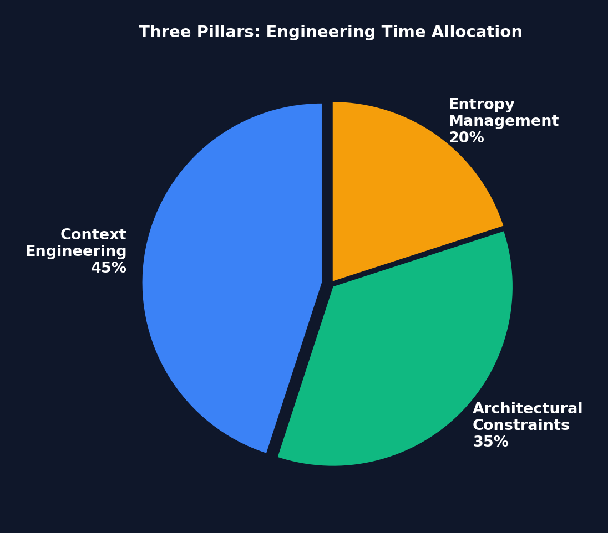
Figure 1-2: Engineering time allocation across three pillars — Context Engineering takes the largest share (45%) because "information the agent can't access doesn't exist"; Architectural Constraints follow (35%); Entropy Management accounts for 20% but is crucial for long-term stability.Pillar 1: Context Engineering
Managing information accessibility, structure, and timing. Key techniques include:
- Static Context: Repository documentation, CLAUDE.md/AGENTS.md files, design documents
- Dynamic Context: Logs, metrics, directory mappings, CI/CD status
- Core Principle: "Information the agent can't access in context doesn't exist"
Pillar 2: Architectural Constraints
Establishing boundaries through mechanical enforcement rather than suggestions:
- Dependency layering (Types → Config → Repo → Service → Runtime → UI)
- Deterministic linters enforcing custom rules
- LLM-based auditors reviewing agent compliance
- Structural tests and pre-commit hooks
Counterintuitive benefit: Constraining the solution space makes agents more productive, not less — by preventing wasted exploration.
Pillar 3: Entropy Management
Periodic cleanup agents addressing codebase degradation:
- Documentation consistency verification
- Constraint violation scanning
- Pattern enforcement
- Dependency auditing
1.3 Harness Engineering vs Related Disciplines
| Discipline | Relationship |
|---|---|
| Prompt Engineering | Subset of Context Engineering (single interaction vs system) |
| ML Engineering | Independent discipline; assumes deployed models |
| Agent Engineering | Complementary; Harness engineers build infrastructure for agents |
| DevOps | Overlapping infrastructure skills applied to AI contexts |
1.4 Pause and Think
Before continuing, try answering this question:
If you were building an AI coding assistant today, where would you spend 80% of your engineering time — improving the model, or improving the system around the model?
If your answer is "the model," Harness Engineering will challenge your intuition. The LangChain case proves that changing only the harness can improve benchmark scores by 14 percentage points. The model is "given" — the harness is what you can control.
1.5 Quantitative Evidence: Harness ROI
Before diving into "why now," let's let the data speak:
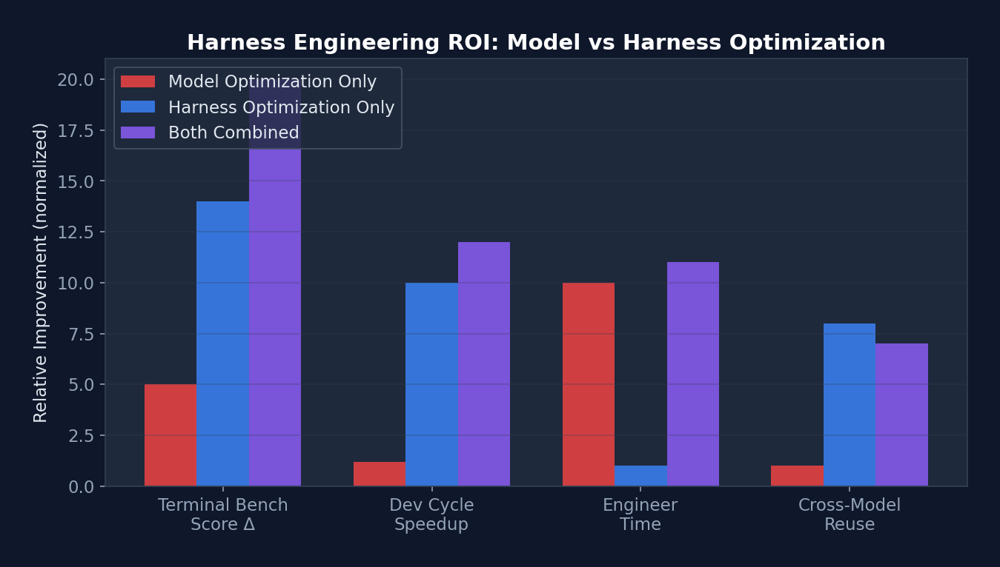
Figure 1-1: Harness optimization ROI far exceeds model optimization — across Terminal Bench scores and dev cycle speedup, harness optimization yields returns an order of magnitude greater than model optimization, requiring only a tenth of the engineering time.| Metric | Model Only | Harness Only | Both Combined |
|---|---|---|---|
| Terminal Bench 2.0 Score Δ | +3-5% (model upgrade) | +14% (LangChain case) | +18-20% |
| Dev Cycle Speedup | Negligible | 10x (OpenAI 1M LOC case) | >10x |
| Engineer Time | Months (training/fine-tuning) | 1-2 hours (Level 1 Harness) | Months |
| Cross-Model Reuse | Model-specific | Reusable across models | Partial reuse |
Key Insight: The ROI of harness optimization far exceeds model optimization. A well-crafted CLAUDE.md file takes only 30 minutes but can improve agent performance on a specific project by 20-40%. In contrast, model fine-tuning requires weeks and substantial compute, with effects limited to specific tasks.
1.6 Why Now?
Three converging factors created the demand:
- Model Commoditization — Competitive advantage shifted from models to systems
- Production Deployment — Agents moved from demos to customer-facing reliability requirements
- Benchmark Limitations — Standard metrics can't measure multi-hour, multi-step agent stability
Real-world impact: LangChain improved from 52.8% to 66.5% on Terminal Bench 2.0 by modifying only the harness architecture — advancing from Top 30 to Top 5.
1.7 Implementation Levels
| Level | Scope | Investment | Content |
|---|---|---|---|
| Level 1 | Individual | 1-2 hours | CLAUDE.md + pre-commit hooks + test suite |
| Level 2 | Small Team | 1-2 days | AGENTS.md conventions + CI constraints + shared templates |
| Level 3 | Organization | 1-2 weeks | Custom middleware + observability + scheduled agents |
Chapter 2: Claude Code Architecture Overview
In the previous chapter we established the theoretical framework. Starting from this chapter, we'll validate these theories using a real, production-running system. That system is Claude Code — Anthropic's official AI coding assistant CLI, with over 500,000 lines of TypeScript code, one of the most complete production-grade Agent Harness reference implementations available.
Why Claude Code? Because it's not a teaching project — it's a real product used daily by tens of thousands of developers. Behind every design decision are real user pain points and engineering trade-offs. By reverse-engineering its architecture, we learn "wisdom that textbooks don't teach."
2.1 Tech Stack
| Category | Technology |
|---|---|
| Runtime | Bun (TypeScript-native, high performance) |
| Language | TypeScript (strict mode) |
| UI Framework | React + Ink (terminal components) |
| CLI Parser | Commander.js (@commander-js/extra-typings) |
| Schema Validation | Zod v4 |
| Search Engine | ripgrep (invoked via BashTool) |
| API Client | @anthropic-ai/sdk |
| Protocols | MCP SDK, LSP |
| State Management | Custom Zustand-like Store + React Context |
| Telemetry | OpenTelemetry + gRPC |
| Feature Flags | GrowthBook + Bun bun:bundle |
| Auth | OAuth 2.0, JWT, macOS Keychain |
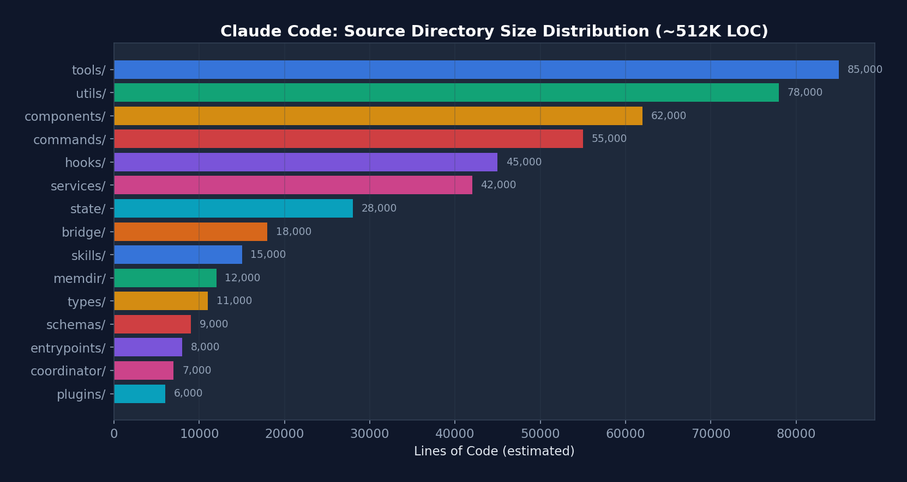
Figure 2-1: Claude Code source directory line count distribution — tools/ and utils/ are the two largest directories, together accounting for ~32% of code, reflecting that the tool system and infrastructure utilities are the harness core.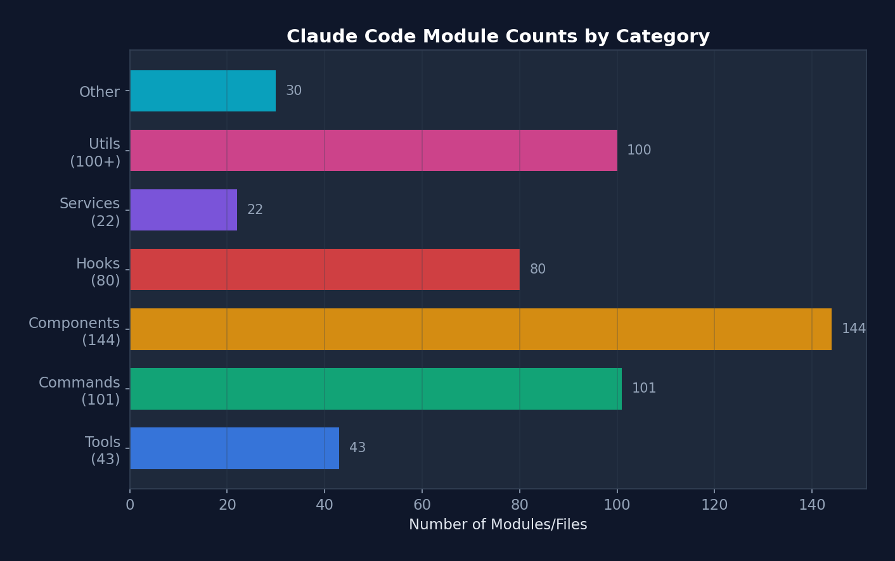
Figure 2-2: Module counts by category — components (144) and commands (101) are the most numerous, reflecting Claude Code's character as a terminal UI application.2.2 Scale
- ~1,884 TypeScript/TSX files
- 512,664 lines of code
- 43+ tools
- 100+ slash commands
- 80+ React hooks
- 144+ UI components
- 22+ service modules
- 26+ hook events
2.3 Directory Structure
src/
├── main.tsx # Entry point, CLI bootstrap (803 KB)
├── query.ts # Core Agent loop (68 KB)
├── QueryEngine.ts # LLM query engine (46 KB)
├── Tool.ts # Tool base interface (29 KB)
├── tools.ts # Tool registry (25 KB)
├── Task.ts # Task type definitions
├── commands.ts # Command registry
│
├── tools/ # 43 tool directories
├── commands/ # ~101 command directories
├── components/ # 144+ React/Ink terminal components
├── hooks/ # 80+ custom React hooks
├── services/ # 22 service subdirectories
├── utils/ # 33+ subdirectories, 100+ files
├── state/ # Application state management
├── entrypoints/ # CLI/MCP/SDK entry points
├── bridge/ # IDE bidirectional communication
├── coordinator/ # Multi-agent orchestration
├── skills/ # Skill system
├── plugins/ # Plugin system
├── memdir/ # Memory directory system
├── schemas/ # Zod validation schemas
├── types/ # Type definitions
└── constants/ # Application constants
2.4 Entry Point Flow
main.tsx → Parallel prefetch (MDM settings + Keychain + API preconnect)
↓
Commander.js CLI parser initialization
↓
preAction Hook: init() → telemetry → plugins → migrations → remote settings
↓
React/Ink renderer bootstrap
↓
Interactive REPL/conversation loop
Design Philosophy: Claude Code's entry point main.tsx (803 KB) employs a lazy loading strategy. Heavy modules (OpenTelemetry, gRPC, analytics) are loaded only when needed, while critical-path items (MDM settings, Keychain) are prefetched in parallel, ensuring fast startup.
2.5 Complete Data Flow Overview
┌─────────────────────────────────────────────────────────────────────┐
│ Claude Code Data Flow Overview │
│ │
│ User Input ──→ UserPromptSubmit Hook ──→ Slash Command Parsing │
│ │ │
│ v │
│ QueryEngine.submitMessage() │
│ │ │
│ ├─→ System prompt build: base + tools + CLAUDE.md + MCP + memory│
│ ├─→ Message normalization: normalizeMessagesForAPI() │
│ │ │
│ v │
│ queryLoop() [while(true)] │
│ │ │
│ ├─→ Compaction pipeline: snip → micro → collapse → auto │
│ ├─→ API call: deps.sample() [streaming] │
│ │ │
│ ├─→ Tool execution: StreamingToolExecutor / runTools │
│ │ │ │
│ │ └─→ Per tool: │
│ │ ├─ Zod schema validation │
│ │ ├─ PreToolUse Hook │
│ │ ├─ Permission check (rules → mode → classifier) │
│ │ ├─ Sandbox wrapping (BashTool) │
│ │ ├─ tool.call() [actual execution] │
│ │ └─ PostToolUse Hook │
│ │ │
│ ├─→ Error recovery: 7 continue sites │
│ └─→ Stop Hook → terminate or continue │
│ │
│ Terminate → SessionEnd Hook → transcript save → exit │
└─────────────────────────────────────────────────────────────────────┘
2.6 Message Type System
Claude Code defines a rich message type system, with different processing paths in the Agent Loop for each type:
// src/types/message.ts — Message type hierarchy
type Message =
| UserMessage // Human input (or tool results)
| AssistantMessage // Model response (text + tool calls)
| AttachmentMessage // Memory/resource attachments
| SystemMessage // System messages
| SystemLocalCommandMessage // Local tool results (bash, read, etc.)
| ToolUseSummaryMessage // Compacted tool history
| TombstoneMessage // Deleted message markers
| ProgressMessage // Streaming progress updates
Chapter 3: Agent Loop — Heart of the Harness
If the Harness is a car, the Agent Loop is its engine. No matter how luxurious the seats or how advanced the airbags, without an engine the car can't move.
This chapter is the most important in the entire book. We will dissect Claude Code's core loop —
queryLoop()— line by line, examining how it drives the entire AI coding assistant with a singlewhile(true). After reading this chapter, you will have a complete understanding of "how agents work" from the bottom up.
The Agent Loop is the most critical component of the entire Harness. Claude Code's implementation lives in src/query.ts's queryLoop() function.
| Termination Reasons | 1 (completed) | 10 |
| Error Recovery Paths | 0 | 5 cascading recoveries |
| Compression Strategies | 0 levels | 4-level pipeline |
| Concurrency Modes | Serial | 2 (Streaming + Sequential) |
| State Fields | 1 (messages) | 10 (State type) |
| Analytics Instrumentation Points | 0 | 15+ |
| Feature Gates | 0 | 8+ |
Complexity Growth Analysis: The growth from 30 lines to 1,800 lines represents a 60-fold increase. However, this is not "over-engineering"—every line corresponds to a real production problem. For example: - The
hasAttemptedReactiveCompactflag is only 1 line, but it prevents an infinite loop bug that would consume thousands of dollars in API costs. - ThetaskBudgetRemainingtracking logic is approximately 20 lines, but it is the only mechanism capable of correctly computing token consumption after compression boundaries. - The StreamingToolExecutor is approximately 200 lines, but it reduces multi-tool execution latency from O(n) to O(1) (the time of the slowest tool).
3.8 Summary of the Agent Loop Design Philosophy
- Resilience over Rigidity: 7+ continue sites allow recovery from virtually any error
- Graceful Degradation: Each error type first attempts the lightest recovery, escalating progressively
- Streaming-First: The Async Generator makes every intermediate state observable
- Explicit State: A single State object with no implicit global state
- Built-in Observability: Every recovery point includes analytics and profiling
Chapter 4: Tool System — The Agent's Hands
If the Agent Loop is the engine, then the tool system is the steering wheel and throttle. No matter how powerful the engine, if it cannot steer or regulate speed, the vehicle will never reach its destination.
In Claude Code, the model (LLM) itself cannot read files, execute commands, or search code. The only thing it can do is generate text. Through the tool system, however, this text is translated into real operations—reading a file, editing a line of code, running a test.
In this chapter, we examine how Claude Code designs a system of 43+ tools, each independently defined yet uniformly managed. These design patterns can be directly reused in your own Agent projects.
The tool system is the sole channel through which the Agent in the Harness interacts with the external world. Claude Code implements a system of 43+ tools, each of which is a self-contained module.
4.1 Tool Interface Definition
Located in src/Tool.ts, this is the base type for all tools:
type Tool<
Input extends AnyObject = AnyObject,
Output = unknown,
P extends ToolProgressData = ToolProgressData,
> = {
// ===== Core Identity =====
name: string; // Tool name (primary identifier)
aliases?: string[]; // Aliases (backward compatibility)
userFacingName(): string; // Display name
// ===== Schema & Validation =====
inputSchema: ZodType<Input>; // Zod input validation
inputJSONSchema?: JSONSchema; // Optional JSON Schema (MCP tools)
outputSchema?: ZodType<Output>; // Optional output type
validateInput(input): Promise<ValidationResult>;
// ===== Execution =====
call(
args: Input,
context: ToolUseContext,
canUseTool: CanUseTool,
parentMessage: AssistantMessage,
progressCallback?: ProgressCallback<P>,
): Promise<ToolResult<Output>>;
// ===== Permissions & Security =====
checkPermissions(args, context): Promise<PermissionDecision>;
isConcurrencySafe(args): boolean; // Can it execute in parallel?
isDestructive(args): boolean; // Irreversible operation?
isReadOnly(): boolean; // Read-only operation?
preparePermissionMatcher(args): string; // Hook pattern matching
// ===== Behavior =====
isEnabled(): boolean; // Feature gate check
interruptBehavior(): 'cancel' | 'block';
requiresUserInteraction(): boolean;
// ===== Rendering =====
renderToolUseMessage(args): ReactElement;
renderToolResultMessage(result): ReactElement;
renderToolUseProgressMessage(progress): ReactElement;
// ===== Search & Deferral =====
searchHint: string; // 3-10 word keywords for ToolSearch
shouldDefer: boolean; // Deferred loading
alwaysLoad: boolean; // Never defer
// ===== Description (Dynamically Generated) =====
description(isNonInteractive?: boolean): string;
prompt(context): string; // System prompt fragment
};
Design Philosophy:
- Self-Describing: Each tool carries its own schema, description, permission logic, and rendering functions
- Dual Schema Support: Zod (internal validation) + JSON Schema (MCP interoperability)
- Dynamic Description:
description()accepts an interaction mode parameter; UI-related instructions can be omitted in non-interactive mode - Deferred Loading:
shouldDeferprevents infrequently used tools from being loaded into the model context during the first turn, conserving tokens
Common Beginner Misconception: Many people design tool systems focusing solely on the
call()method—"what the tool can do." In production environments, however, permission checking, input validation, and progress rendering account for 80% of the tool's code. A well-designed tool interface is not merely about "execution" but about "executing safely, observably, and interruptibly."
4.2 Tool Registry
Located in src/tools.ts:
// The single source of truth for all tools
function getAllBaseTools(): Tool[] {
return [
// === Always Loaded ===
AgentTool,
TaskOutputTool,
BashTool,
FileReadTool,
FileEditTool,
FileWriteTool,
WebFetchTool,
WebSearchTool,
AskUserQuestionTool,
SkillTool,
// ...more always-available tools
// === Feature-Gated ===
...(feature('PROACTIVE') ? [SleepTool] : []),
...(feature('AGENT_TRIGGERS') ? [ScheduleCronTool] : []),
...(feature('COORDINATOR_MODE') ? [TeamCreateTool, TeamDeleteTool] : []),
...(isReplModeEnabled() ? [REPLTool] : []),
// ...more conditional tools
];
}
Dead Code Elimination:
// Bun's bun:bundle evaluates feature() calls at compile time
// If feature('PROACTIVE') compiles to false:
...(false ? [SleepTool] : [])
// → All of SleepTool's code is removed via tree-shaking
// Including all strings and dependencies it references
This is a key design pattern in Claude Code: compile-time feature gating. External distributions can remove entire subsystems by setting feature flags, without the need to manually delete code.
4.3 Tool Pool Assembly
function assembleToolPool(builtInTools: Tool[], mcpTools: Tool[]): Tool[] {
// 1. Filter MCP tools blocked by deny rules
const filteredMcp = mcpTools.filter(t => !getDenyRuleForTool(t));
// 2. Sort each group separately (to maintain prompt cache stability)
const sortedBuiltIn = sortBy(builtInTools, t => t.name);
const sortedMcp = sortBy(filteredMcp, t => t.name);
// 3. Concatenate: built-in tools first (serving as the cache prefix)
const combined = [...sortedBuiltIn, ...sortedMcp];
// 4. Deduplicate (built-in tools take priority)
return uniqBy(combined, t => t.name);
}
Cache Stability Design:
Built-in tools, sorted by name, form a stable cache prefix. When MCP tools are added or removed, the prefix remains unchanged, preventing invalidation of Anthropic API's prompt cache. This is a subtle but important performance optimization.
4.4 Tool Execution Lifecycle
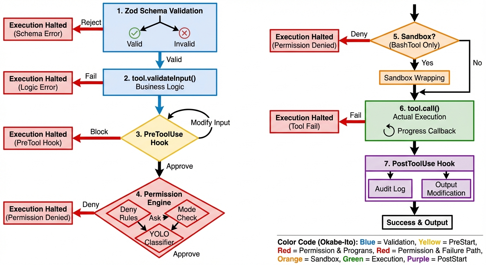
Figure 4-1: The 7-step tool execution pipeline — from Zod Schema validation to PostToolUse Hook, each step may alter the tool's behavior or prevent execution entirely.The following sequence diagram illustrates the complete path of a tool from request to execution—note how Hooks intervene at critical junctures:
sequenceDiagram
participant M as Model
participant V as Validator
participant PH as PreToolUse Hook
participant P as Permission Engine
participant S as Sandbox
participant T as Tool.call()
participant AH as PostToolUse Hook
M->>V: tool_use block
V->>V: Zod Schema 验证
alt 验证失败
V-->>M: 格式错误消息
end
V->>V: tool.validateInput()
alt 验证失败
V-->>M: 业务逻辑错误
end
V->>PH: 输入 JSON
PH->>PH: 条件匹配 (if 字段)
alt Hook 阻止
PH-->>M: blocking error
else Hook 修改输入
PH->>P: updatedInput
else Hook 批准
PH->>P: allow (但不绕过 deny 规则)
end
P->>P: deny规则 → ask规则 → 模式检查
alt 权限拒绝
P-->>M: 拒绝消息 + 建议
end
P->>S: 命令包装 (仅 BashTool)
S->>S: wrapWithSandbox()
S->>T: 沙盒化命令
T->>T: 实际执行
T->>AH: 执行结果
AH->>AH: 审计日志 / 输出修改
AH-->>M: 最终 tool_result
The following traditional flowchart illustrates the same process:
User/Model requests tool invocation
│
v
┌─────────────────────────┐
│ 1. validateInput() │ Structural validation (required fields, ranges)
│ Using Zod Schema │
└────────┬────────────────┘
│ Pass
v
┌─────────────────────────┐
│ 2. checkPermissions() │ Tool-specific permission logic
│ Returns allow/ask/deny│
└────────┬────────────────┘
│ Not denied
v
┌─────────────────────────┐
│ 3. Rule-Based Perms │ allow/deny/ask rules from settings
│ checkRuleBasedPerms() │
└────────┬────────────────┘
│ Not denied
v
┌─────────────────────────┐
│ 4. PreToolUse Hooks │ User-defined Hooks
│ May approve or block │
└────────┬────────────────┘
│ Not blocked
v
┌─────────────────────────┐
│ 5. User Prompt/Classifier│ Final approval (or auto-classifier)
│ auto mode: YOLO │
│ classifier │
└────────┬────────────────┘
│ Approved
v
┌─────────────────────────┐
│ 6. call() │ Actual tool execution
│ Returns ToolResult │
└────────┬────────────────┘
│
v
┌─────────────────────────┐
│ 7. PostToolUse Hooks │ Post-execution callbacks
│ Audit logging, │
│ notifications, etc. │
└─────────────────────────┘
4.5 Tool Execution Pipeline (with Hook Integration from Real Code)
Tool execution is far more than simply calling tool.call()—it is a multi-step pipeline where each step may alter behavior:
// src/services/tools/toolExecution.ts — Real execution pipeline
async function checkPermissionsAndCallTool(
tool: Tool,
toolUseID: string,
input: Record<string, unknown>,
toolUseContext: ToolUseContext,
canUseTool: CanUseToolFn,
assistantMessage: AssistantMessage,
onToolProgress: (progress: ToolProgress) => void,
): Promise<MessageUpdate[]> {
// ===== Step 1: Zod Schema Validation =====
const parsedInput = tool.inputSchema.safeParse(input)
if (!parsedInput.success) {
return [{ message: createUserMessage({
content: formatZodValidationError(tool.name, parsedInput.error),
}) }]
}
// ===== Step 2: Tool-Specific Validation =====
const isValidCall = await tool.validateInput?.(parsedInput.data, toolUseContext)
if (isValidCall?.result === false) {
return [{ message: createUserMessage({
content: isValidCall.message,
}) }]
}
// ===== Step 3: PreToolUse Hook =====
// Hooks can: approve, block, modify input, or inject context
let processedInput = parsedInput.data
let hookPermissionResult: PermissionResult | undefined
for await (const result of runPreToolUseHooks(...)) {
switch (result.type) {
case 'hookPermissionResult':
hookPermissionResult = result.hookPermissionResult
break
case 'hookUpdatedInput':
processedInput = result.updatedInput // Hook modified the input!
break
}
}
// ===== Step 4: Permission Resolution (Hook + Rules Interaction) =====
// Key design: A Hook's 'allow' does NOT bypass deny/ask rules in settings.json
const { decision, input: callInput } = await resolveHookPermissionDecision(
hookPermissionResult, tool, processedInput,
toolUseContext, canUseTool, assistantMessage, toolUseID,
)
if (decision.behavior !== 'allow') {
return [/* Permission denied message */]
}
// ===== Step 5: Actual Tool Execution =====
let toolResult = await tool.call(
callInput, toolUseContext, canUseTool,
assistantMessage, onToolProgress,
)
// ===== Step 6: PostToolUse Hook =====
// Hooks can: modify MCP tool output, inject additional context
for await (const result of runPostToolUseHooks(...)) {
if (result.updatedMCPToolOutput) {
toolResult = { ...toolResult, data: result.updatedMCPToolOutput }
}
}
// ===== Step 7: Convert to API Format and Return =====
return resultingMessages
}
Hook Permission Decision Resolution (the most nuanced part):
// src/services/tools/toolHooks.ts — Real code
export async function resolveHookPermissionDecision(
hookPermissionResult, tool, input, toolUseContext,
canUseTool, assistantMessage, toolUseID,
) {
if (hookPermissionResult?.behavior === 'allow') {
// The Hook says "allow"—but this is NOT the final verdict!
// deny/ask rules still apply (security invariant)
// If the tool requires user interaction and the Hook provides updatedInput,
// then the Hook serves as the "user interaction" (e.g., a headless wrapper)
const interactionSatisfied =
tool.requiresUserInteraction?.() &&
hookPermissionResult.updatedInput !== undefined
// Even if the Hook allows, rules are still checked
const ruleCheck = await checkRuleBasedPermissions(tool, input, toolUseContext)
if (ruleCheck?.behavior === 'deny') {
// Deny rule overrides the Hook's allow!
return { decision: ruleCheck, input }
}
if (ruleCheck?.behavior === 'ask') {
// Ask rule still requires a dialog
return { decision: await canUseTool(...), input }
}
// No rule blocks → Hook's allow takes effect
return { decision: hookPermissionResult, input }
}
// ... deny and ask handling
}
Core Security Invariant: deny > settings rules > hook allow. Even if a Hook approves an operation, deny rules in settings.json will still block it. This prevents malicious Hooks from circumventing security policies.
Why can't a Hook allow bypass deny rules? This is a genuine security consideration. Imagine you have installed a third-party MCP server that provides a PreToolUse Hook returning
allowfor all operations. If a Hook allow could bypass deny rules, this third-party code would acquire permissions exceeding your security policy—it could enable the Agent to perform operations you have explicitly prohibited. Claude Code's design guarantees that: deny rules you define in settings.json constitute an inviolable baseline, regardless of any Hook intervention.
4.6 FileEditTool String Replacement Algorithm
The core algorithm of FileEditTool merits independent analysis—it handles smart quote matching, a genuine engineering challenge:
// src/tools/FileEditTool/utils.ts — Real code
// Problem: The model sometimes generates "curly quotes" (smart quotes)
// but the file contains "straight quotes", or vice versa
const LEFT_DOUBLE_CURLY_QUOTE = '\u201C' // "
const RIGHT_DOUBLE_CURLY_QUOTE = '\u201D' // "
function normalizeQuotes(str: string): string {
return str
.replaceAll('\u2018', "'") // ' → '
.replaceAll('\u2019', "'") // ' → '
.replaceAll('\u201C', '"') // " → "
.replaceAll('\u201D', '"') // " → "
}
// Three-phase search algorithm
function findActualString(fileContent: string, searchString: string): string | null {
// Phase 1: Exact match
if (fileContent.includes(searchString)) return searchString
// Phase 2: Quote-normalized match
const normalizedSearch = normalizeQuotes(searchString)
const normalizedFile = normalizeQuotes(fileContent)
const searchIndex = normalizedFile.indexOf(normalizedSearch)
if (searchIndex !== -1) {
// Return the **original** string from the file (preserving original quote style)
return fileContent.substring(searchIndex, searchIndex + searchString.length)
}
return null
}
// Replacement algorithm
function applyEditToFile(
originalContent: string,
oldString: string,
newString: string,
replaceAll: boolean = false,
): string {
const f = replaceAll
? (content, search, replace) => content.replaceAll(search, () => replace)
: (content, search, replace) => content.replace(search, () => replace)
if (newString !== '') return f(originalContent, oldString, newString)
// Edge case: deletion operation
// If oldString does not end with a newline, but the file has a newline
// immediately after oldString, delete that newline as well (to prevent leaving blank lines)
const stripTrailingNewline =
!oldString.endsWith('\n') && originalContent.includes(oldString + '\n')
return stripTrailingNewline
? f(originalContent, oldString + '\n', newString)
: f(originalContent, oldString, newString)
}
Design Insight: The use of () => replace rather than passing the replace string directly prevents special patterns such as $1 and $& in the replacement string from being misinterpreted by JavaScript's regex replacement mechanism. A subtle but critical defense.
4.7 Quantitative Analysis: Performance Characteristics of Tool Execution
| Execution Mode | Scenario | Latency Model | Actual Performance |
|---|---|---|---|
| StreamingToolExecutor Concurrent | 10 Read tools | O(max(t_i)) | ~50ms (slowest file read time) |
| StreamingToolExecutor Sequential | 1 Write followed by 1 Read | O(sum of t_i) | ~80ms (write + read in sequence) |
| runTools Concurrent Batch | 5 Read + 1 Write + 3 Read | O(max(5)) + O(1) + O(max(3)) | ~130ms |
| Internal Callback Hook Fast Path | PostToolUse (all internal Hooks) | O(n) but extremely fast | ~1.8us (after optimization) |
| External Hook Execution | PreToolUse command Hook | O(hook_timeout) | 5-30s (depending on script) |
Source Code Annotation: Regarding the internal Hook fast path, the source code comments: "Fast-path: all hooks are internal callbacks (sessionFileAccessHooks, attributionHooks). These return {} and don't use the abort signal... Measured: 6.01us -> ~1.8us per PostToolUse hit (-70%)." This 70% performance improvement comes from skipping span/progress/abortSignal/JSON parsing—for PostToolUse Hooks that fire on every tool invocation, such micro-optimizations yield significant cumulative gains.
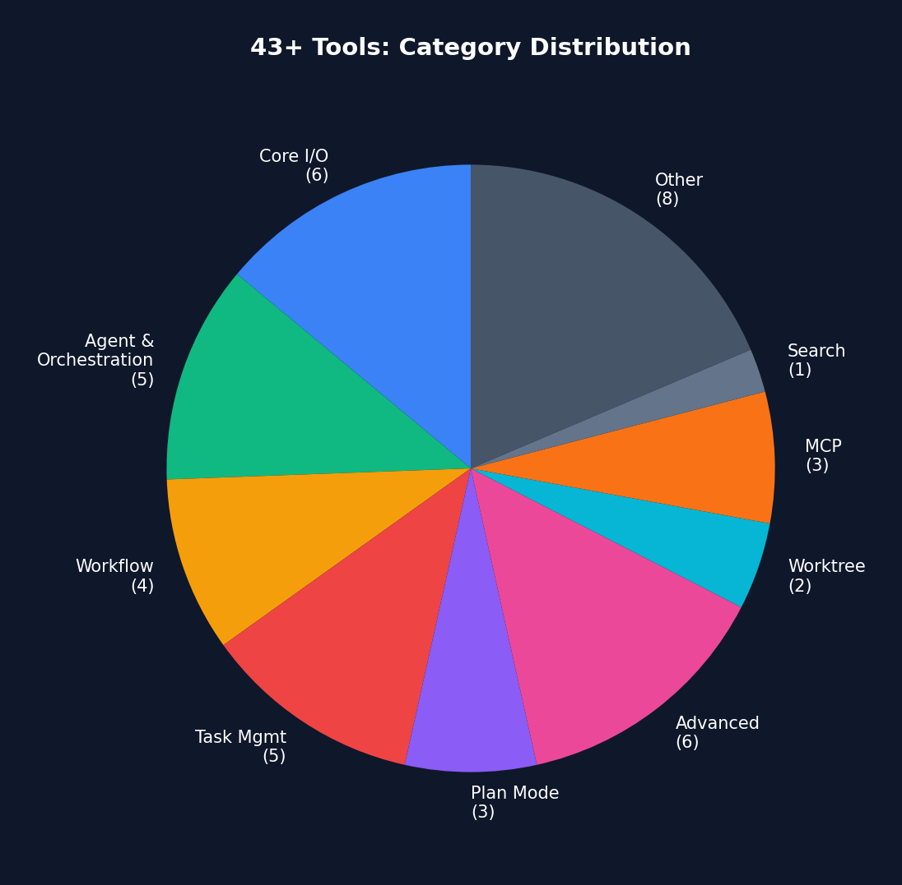
Figure 4-2: Category distribution of 43+ tools — Core I/O (6 tools) has the highest usage frequency, while Advanced (6 tools) are loaded on demand via feature gates.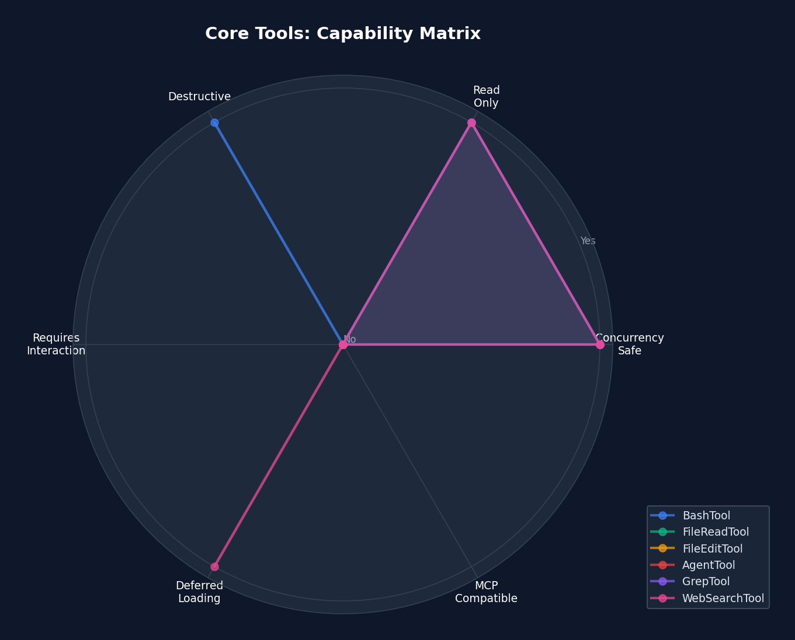
Figure 4-3: Core tool capability radar chart — displaying dimensions such as concurrency safety, read-only status, and destructiveness. FileReadTool and GrepTool are the "safest" tools (concurrency-safe + read-only), while BashTool is the "most dangerous" (potentially destructive + non-read-only + not concurrency-safe).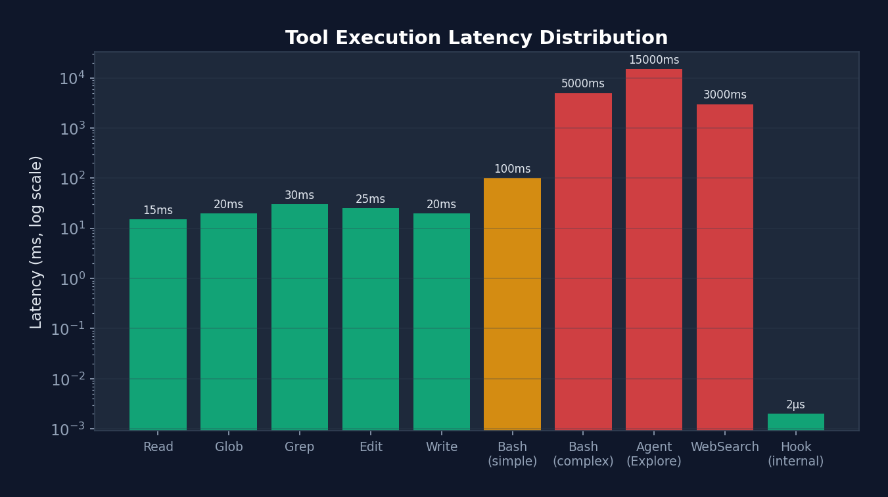
Figure 4-4: Tool execution latency distribution (logarithmic scale) — spanning from 2us for internal Hooks to 15 seconds for Agent Explore, latency covers 7 orders of magnitude. This explains why the StreamingToolExecutor's concurrency optimization is so critical—in multi-tool scenarios, it reduces total latency from the sum of all tools to the time of the slowest tool.4.8 Tool Classification
| Category | Tools | Characteristics |
|---|---|---|
| Core I/O | BashTool, FileReadTool, FileWriteTool, FileEditTool, GlobTool, GrepTool | Always loaded |
| Agent | AgentTool, SendMessageTool, TeamCreateTool, TeamDeleteTool | Sub-agent spawning and management |
| Workflow | WebFetchTool, WebSearchTool, NotebookEditTool | External resource access |
| Task | TaskCreateTool, TaskUpdateTool, TaskListTool, TaskOutputTool, TaskStopTool | Task management |
| Planning | EnterPlanModeTool, ExitPlanModeTool, TodoWriteTool | Plan mode |
| Advanced | ScheduleCronTool, SleepTool, MonitorTool, REPLTool | Feature-gated |
| Worktree | EnterWorktreeTool, ExitWorktreeTool | Git worktree isolation |
| MCP | MCPTool, ListMcpResourcesTool, ReadMcpResourceTool | MCP protocol |
| Search | ToolSearchTool | Deferred tool discovery |
4.6 Tool Deferral
// Not all tools are loaded on the first turn
// Tools with shouldDefer = true are not sent to the model
// until ToolSearchTool is invoked to discover them
// Example: NotebookEditTool
{
name: 'NotebookEdit',
shouldDefer: true, // Not loaded on the first turn
searchHint: 'jupyter notebook cell edit insert',
alwaysLoad: false,
}
// Example: BashTool
{
name: 'Bash',
shouldDefer: false, // Always loaded
alwaysLoad: true, // Never deferred
}
Design Philosophy:
The model's tool definitions consume the token budget. Loading all 43+ tools at once would consume a substantial amount of context space. Through deferred loading, only core tools (~15) are loaded on the first turn, while the rest are discovered on demand via ToolSearch. This is a canonical application of context engineering.
Chapter 5: Permission Model — The Constraint Architecture
Recall the "taming a horse" metaphor from Chapter 1. So far, our horse (Agent) has an engine (Loop) and a control system (Tools). But what if it could run freely and trample crops at will? We need fences—this is the permission model.
This is the most critical "constraint" pillar of Harness Engineering. A well-designed permission model does not "impose restrictions" on the Agent—it "reduces the Agent's likelihood of making errors." Claude Code's permission system is one of the most mature implementations in the industry, and it reveals a counterintuitive truth: the more precise the constraints, the freer the Agent becomes. Because when you can precisely control risk, you dare to let the Agent do more.
The permission model is the "safety valve" of the Harness. It determines what the Agent can do, cannot do, and must ask about.
5.1 Five Permission Modes
type PermissionMode =
| 'default' // Always ask for sensitive operations
| 'acceptEdits' // Auto-approve file edits, ask for others
| 'bypassPermissions' // Auto-approve everything (dangerous)
| 'dontAsk' // Auto-deny operations that require asking
| 'plan' // Plan mode restriction (read-only + plan files)
| 'auto' // AI classifier auto-approval (experimental)
| 'bubble'; // Bubble up to parent Agent (used by sub-agents)
Design Philosophy:
The modes are not binary (allow/deny) but rather a spectrum. default is the safest, suitable for new users; bypassPermissions is for automation in trusted environments; auto is the most interesting—it uses a two-stage AI classifier to determine whether an operation is safe.
Analogy: Permission modes are like driver-assistance systems in a car.
defaultis equivalent to novice mode—every lane change requires your confirmation.acceptEditsis equivalent to adaptive cruise control—automatic for going straight, manual for turning.bypassPermissionsis equivalent to full self-driving—you completely trust the system.autois the most interesting—it is an AI driver helping you drive, but it has its own "safety operator" (the YOLO classifier) supervising it.
5.2 Three-Tier Rule System
type PermissionRule = {
source: PermissionRuleSource; // Rule source
ruleBehavior: 'allow' | 'deny' | 'ask';
ruleValue: {
toolName: string; // e.g., "Bash", "Write", "mcp__server"
ruleContent?: string; // e.g., "git *", "*.ts", "prefix:npm *"
};
};
Rule Syntax Examples:
# Allow all git commands
Bash(git *)
# Allow writing to TypeScript files
Write(*.ts)
# Deny all MCP server tools
mcp__*
# Allow reading any file
Read
# Deny rm -rf commands
Bash(rm -rf *)
# Allow all tools from a specific MCP server
mcp__my-server(*)
5.3 Defense-in-Depth Model
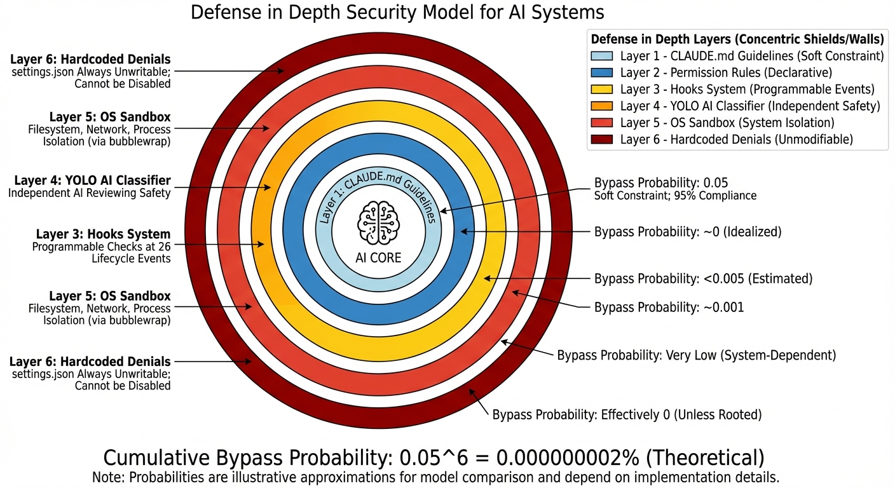
Figure 5-1: The six-layer defense-in-depth security model — from soft constraints (CLAUDE.md, ~95% compliance rate) to hard constraints (hardcoded denials, 100% unbypassable), layers stack to drive the overall bypass probability toward zero.Before diving into specific permission rules, let us first understand Claude Code's six-layer security architecture from a macroscopic perspective. This is one of the most important design patterns in the entire Harness:
flowchart TB
subgraph Layer1["Layer 1: CLAUDE.md (Instructional Constraints)"]
direction LR
L1["Tell the Agent 'do not modify the migrations/ directory'"]
end
subgraph Layer2["Layer 2: Permission Rules (Declarative Constraints)"]
direction LR
L2["allow/deny/ask rules in settings.json"]
end
subgraph Layer3["Layer 3: Hooks (Programmable Constraints)"]
direction LR
L3["PreToolUse scripts check operation legitimacy"]
end
subgraph Layer4["Layer 4: YOLO Classifier (AI Constraints)"]
direction LR
L4["An independent AI model reviews operation safety"]
end
subgraph Layer5["Layer 5: Sandbox (System-Level Constraints)"]
direction LR
L5["OS-level file/network isolation"]
end
subgraph Layer6["Layer 6: Hardcoded Denials (Non-Overridable Constraints)"]
direction LR
L6["settings.json is always non-writable, cannot be disabled via configuration"]
end
Layer1 --> Layer2 --> Layer3 --> Layer4 --> Layer5 --> Layer6
classDef soft fill:#dbeafe,stroke:#2563eb,color:#1e3a5f
classDef medium fill:#fef9c3,stroke:#ca8a04,color:#713f12
classDef hard fill:#fee2e2,stroke:#dc2626,color:#7f1d1d
class Layer1 soft
class Layer2,Layer3 medium
class Layer4 medium
class Layer5,Layer6 hard
Analysis: Note the color gradient—from blue (soft constraints, which can be ignored) to yellow (medium constraints, which can be overridden by configuration) to red (hard constraints, which are unbypassable). In engineering practice, Layer 1 (CLAUDE.md) has a compliance rate of approximately 95%—the model occasionally "forgets." However, Layer 6 has a 100% compliance rate because it is hardcoded. This gradient design means: you do not need every layer to be perfect, as long as the cumulative probability across all layers is sufficiently low. If each layer has a 5% bypass rate, the cumulative bypass probability after 6 layers is 0.05^6 approximately equal to 0.000000002%.
5.4 Settings Hierarchy (7 Priority Levels)
Rules originate from multiple sources, ordered from highest to lowest priority:
Highest priority
↓
1. CLI Arguments (cliArg) — Command-line overrides
2. Session Commands (command) — /permissions command
3. Flag Settings (flagSettings) — CLAUDE_CODE_FLAG_SETTINGS
4. Policy Settings (policySettings) — Organizational policies
5. Local Settings (localSettings) — .claude/settings.json.local
6. Project Settings (projectSettings) — .claude/settings.json
7. User Settings (userSettings) — ~/.claude/settings.json
↓
Lowest priority
With Enterprise Managed Settings:
Managed Settings (MDM/Enterprise):
├── /managed/managed-settings.json — Base managed settings
├── /managed/managed-settings.d/*.json — Drop-in overrides
└── macOS plutil / Windows Registry — OS-level MDM
Design Philosophy:
The hierarchical settings allow policies to be imposed at the organizational level without modifying user settings. Enterprise administrators can lock certain permissions via MDM (Mobile Device Management), project maintainers can define reasonable defaults in project settings, and individual users can fine-tune on top of that.
flowchart BT
U["User Settings\n~/.claude/settings.json\nLowest priority"] --> P["Project Settings\n.claude/settings.json"]
P --> L["Local Settings\n.claude/settings.json.local\nNot committed to git"]
L --> Po["Policy Settings\nOrganizational policies"]
Po --> M["Managed Settings\nMDM/Enterprise\nCan be locked"]
M --> F["Flag Settings\nEnvironment variables"]
F --> C["CLI Arguments\nHighest priority"]
classDef low fill:#dcfce7,stroke:#16a34a,color:#14532d
classDef mid fill:#fef9c3,stroke:#ca8a04,color:#713f12
classDef high fill:#fee2e2,stroke:#dc2626,color:#7f1d1d
class U,P low
class L,Po mid
class M,F,C high
Analysis: Trust Hierarchy and Override Direction
Note that the arrow direction is from bottom to top—lower priority at the bottom, higher priority at the top. This is not coincidental: the closer a setting is to "runtime," the higher its priority. User settings are the "most distant" (edited once, used long-term), while CLI arguments are the "most proximate" (can differ with each invocation). This design allows you to temporarily override any setting with CLI arguments without modifying files.
Another key design:
lockedByPolicy: trueenables administrators to lock sandbox settings so that users cannot disable them. The source code comments note that this was "Added to unblock NVIDIA enterprise rollout"—a real enterprise customer requirement drove this feature.
5.4 Permission Decision Pipeline (Real Source Code)
The following is the real permission pipeline from src/utils/permissions/permissions.ts, with comments revealing the rationale behind each decision:
// src/utils/permissions/permissions.ts — Real code
async function hasPermissionsToUseToolInner(
tool: Tool, input: Record<string, unknown>, context: ToolUseContext,
): Promise<PermissionDecision> {
if (context.abortController.signal.aborted) throw new AbortError()
let appState = context.getAppState()
// ===== 1a. Entire Tool Denied =====
const denyRule = getDenyRuleForTool(appState.toolPermissionContext, tool)
if (denyRule) {
return { behavior: 'deny', decisionReason: { type: 'rule', rule: denyRule },
message: `Permission to use ${tool.name} has been denied.` }
}
// ===== 1b. Entire Tool Set to Ask =====
const askRule = getAskRuleForTool(appState.toolPermissionContext, tool)
if (askRule) {
// Special case: sandbox auto-allow
// When autoAllowBashIfSandboxed is enabled, sandboxed commands skip ask rules
// Commands that won't be sandboxed (excluded commands, dangerouslyDisableSandbox) still obey ask
const canSandboxAutoAllow =
tool.name === BASH_TOOL_NAME &&
SandboxManager.isSandboxingEnabled() &&
SandboxManager.isAutoAllowBashIfSandboxedEnabled() &&
shouldUseSandbox(input)
if (!canSandboxAutoAllow) {
return { behavior: 'ask', decisionReason: { type: 'rule', rule: askRule } }
}
// Falls through to let Bash's checkPermissions handle command-level rules
}
// ===== 1c. Tool-Specific Permission Check =====
let toolPermissionResult: PermissionResult = { behavior: 'passthrough' }
try {
const parsedInput = tool.inputSchema.parse(input)
toolPermissionResult = await tool.checkPermissions(parsedInput, context)
} catch (e) {
if (e instanceof AbortError) throw e
logError(e)
}
// ===== 1d. Tool Implementation Denies =====
if (toolPermissionResult?.behavior === 'deny') return toolPermissionResult
// ===== 1e. Tools Requiring User Interaction =====
if (tool.requiresUserInteraction?.() && toolPermissionResult?.behavior === 'ask') {
return toolPermissionResult
}
// ===== 1f. Content-Level Ask Rules (Important!) =====
// When the user configures content-level ask rules such as Bash(npm publish:*),
// tool.checkPermissions returns {behavior:'ask', decisionReason:{type:'rule', ruleBehavior:'ask'}}
// This must be respected, even in bypassPermissions mode!
if (toolPermissionResult?.behavior === 'ask' &&
toolPermissionResult.decisionReason?.type === 'rule' &&
toolPermissionResult.decisionReason.rule.ruleBehavior === 'ask') {
return toolPermissionResult
}
// ===== 1g. Safety Checks (Unbypassable) =====
// .git/, .claude/, .vscode/, shell config paths, etc.
// Must prompt even in bypassPermissions mode
if (toolPermissionResult?.behavior === 'ask' &&
toolPermissionResult.decisionReason?.type === 'safetyCheck') {
return toolPermissionResult
}
// ===== 2a. Mode Check =====
appState = context.getAppState() // Re-fetch latest state
const shouldBypassPermissions =
appState.toolPermissionContext.mode === 'bypassPermissions' ||
(appState.toolPermissionContext.mode === 'plan' &&
appState.toolPermissionContext.isBypassPermissionsModeAvailable)
if (shouldBypassPermissions) {
return { behavior: 'allow', decisionReason: { type: 'mode', mode: '...' } }
}
// ===== 2b. Entire Tool Allowed =====
const allowRule = toolAlwaysAllowedRule(appState.toolPermissionContext, tool)
if (allowRule) {
return { behavior: 'allow', decisionReason: { type: 'rule', rule: allowRule } }
}
// ===== 3. passthrough → ask =====
return toolPermissionResult.behavior === 'passthrough'
? { ...toolPermissionResult, behavior: 'ask' }
: toolPermissionResult
}
// ===== Outer Wrapper: Mode Conversion =====
export const hasPermissionsToUseTool: CanUseToolFn = async (...) => {
const result = await hasPermissionsToUseToolInner(...)
// Allow → reset consecutive denial counter
if (result.behavior === 'allow') {
if (feature('TRANSCRIPT_CLASSIFIER') && context.mode === 'auto') {
persistDenialState(context, recordSuccess(currentDenialState))
}
return result
}
// ask → mode conversion
if (result.behavior === 'ask') {
if (appState.toolPermissionContext.mode === 'dontAsk') {
return { behavior: 'deny', decisionReason: { type: 'mode', mode: 'dontAsk' } }
}
// auto mode → AI classifier (see Section 5.5)
}
return result
}
Permission Decision Sequence Diagram:
Tool invocation request
│
┌─────────────┼─────────────┐
│ │ │
Deny rule? Ask rule? Allow rule?
│ Yes │ Yes │ Yes
v │ v
Deny Can sandbox Allow
auto-allow?
│ No
v
tool.checkPermissions()
│
┌────────┼────────┐
│ │ │
deny ask allow/
│ │ passthrough
v │ │
Deny Content- │
level rule? │
│ Yes │
v │
Deny/Ask │
│
Safety │
check? ────┤
│ Yes │
v │
Ask │
│
bypassPermissions?
│ Yes │ No
v v
Allow Allow rule?
│ Yes │ No
v v
Allow ask → mode conversion
├─ dontAsk → deny
├─ auto → AI classifier
└─ default → user prompt
5.5 Permission Rule Parser (Real Source Code)
Parsing rule strings is more complex than it appears—escaped parentheses must be handled:
// src/utils/permissions/permissionRuleParser.ts — Real code
// Input: "Bash(python -c \"print\\(1\\)\")"
// Output: { toolName: "Bash", ruleContent: "python -c \"print(1)\"" }
export function permissionRuleValueFromString(ruleString: string): PermissionRuleValue {
// Find the first **unescaped** opening parenthesis
const openParenIndex = findFirstUnescapedChar(ruleString, '(')
if (openParenIndex === -1) {
return { toolName: normalizeLegacyToolName(ruleString) }
}
// Find the last **unescaped** closing parenthesis
const closeParenIndex = findLastUnescapedChar(ruleString, ')')
if (closeParenIndex === -1 || closeParenIndex <= openParenIndex) {
return { toolName: normalizeLegacyToolName(ruleString) }
}
// The closing parenthesis must be at the end
if (closeParenIndex !== ruleString.length - 1) {
return { toolName: normalizeLegacyToolName(ruleString) }
}
const toolName = ruleString.substring(0, openParenIndex)
const rawContent = ruleString.substring(openParenIndex + 1, closeParenIndex)
// Empty content "Bash()" or wildcard "Bash(*)" → tool-level rule
if (rawContent === '' || rawContent === '*') {
return { toolName: normalizeLegacyToolName(toolName) }
}
// Unescape: \\( → (, \\) → ), \\\\ → \\
const ruleContent = unescapeRuleContent(rawContent)
return { toolName: normalizeLegacyToolName(toolName), ruleContent }
}
// Determine whether a character is escaped (preceded by an odd number of backslashes)
function findFirstUnescapedChar(str: string, char: string): number {
for (let i = 0; i < str.length; i++) {
if (str[i] === char) {
let backslashCount = 0
let j = i - 1
while (j >= 0 && str[j] === '\\') { backslashCount++; j-- }
if (backslashCount % 2 === 0) return i // Even number of backslashes = unescaped
}
}
return -1
}
MCP Server-Level Rule Matching:
// Rule "mcp__server1" matches tool "mcp__server1__tool1"
// Rule "mcp__server1__*" matches all tools from server1
function toolMatchesRule(tool, rule): boolean {
if (rule.ruleValue.ruleContent !== undefined) return false // Content rules don't match entire tools
const nameForRuleMatch = getToolNameForPermissionCheck(tool)
if (rule.ruleValue.toolName === nameForRuleMatch) return true
// MCP server-level matching
const ruleInfo = mcpInfoFromString(rule.ruleValue.toolName)
const toolInfo = mcpInfoFromString(nameForRuleMatch)
return ruleInfo !== null && toolInfo !== null &&
(ruleInfo.toolName === undefined || ruleInfo.toolName === '*') &&
ruleInfo.serverName === toolInfo.serverName
}
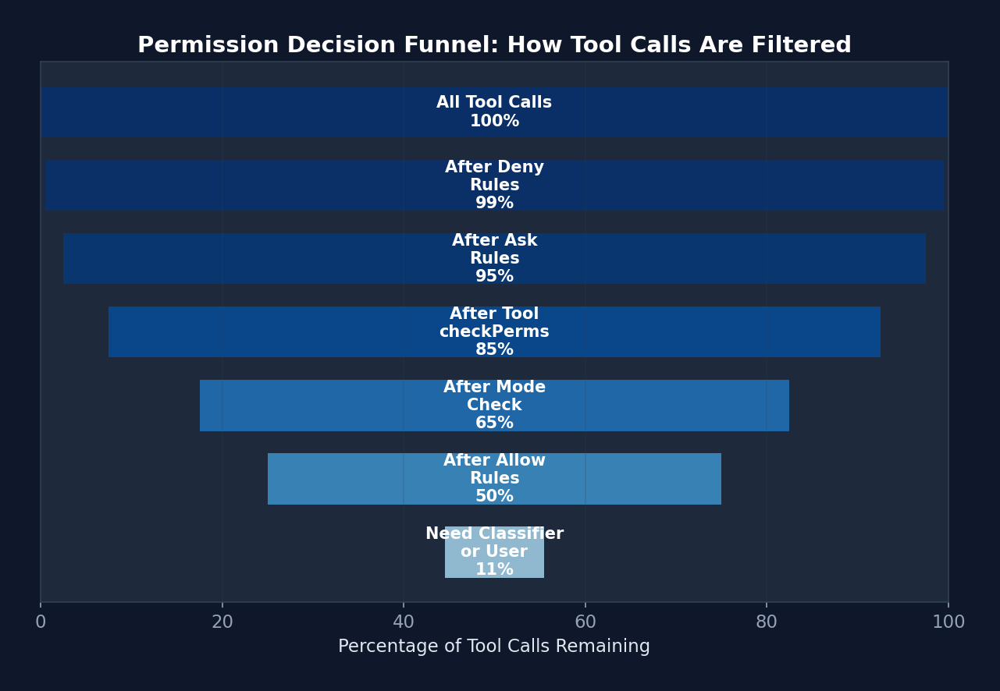
Figure 5-2: The permission decision funnel — 100% of tool invocations pass through progressive filtering, with ultimately only ~11% requiring the expensive classifier or user confirmation. The first 4 steps filter out 89% of invocations, all via zero-cost rule matching.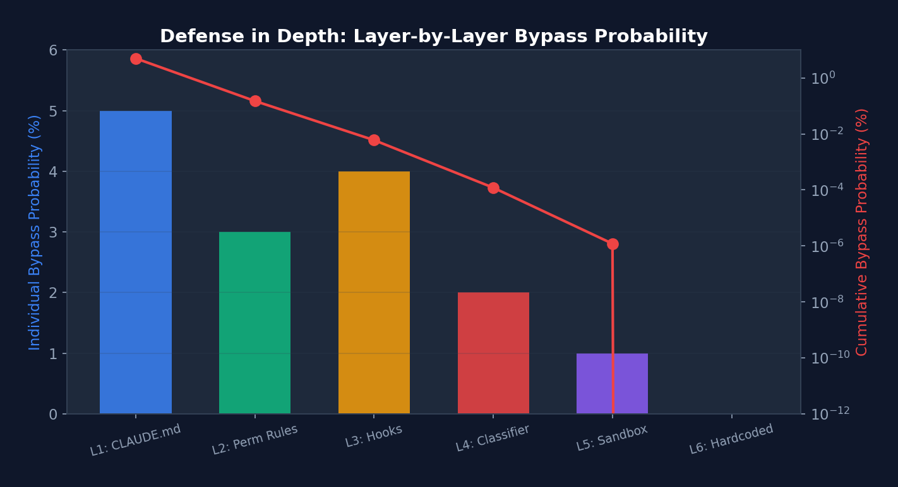
Figure 5-3: Layer-by-layer bypass probability in the defense-in-depth model (blue bars: per-layer probability, red line: cumulative probability, logarithmic scale) — after stacking 6 layers, the cumulative bypass probability approaches zero. Note that Layer 6 (hardcoded denials) has a per-layer probability of 0, driving the cumulative probability to zero.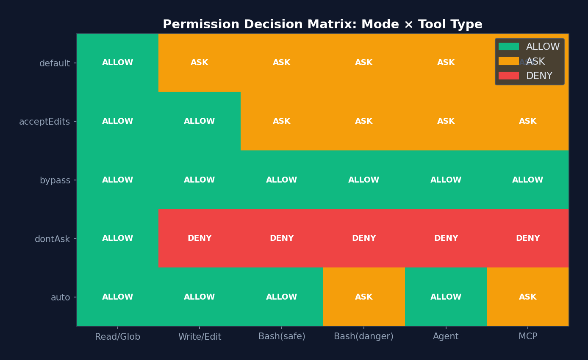
Figure 5-4: Permission decision matrix heatmap — 5 permission modes x 6 tool types and their decision outcomes. Green = ALLOW, Orange = ASK, Red = DENY. Note that underauto mode, Bash(danger) remains ASK—the classifier adopts a conservative strategy for high-risk operations.
5.6 Quantitative Analysis: Distribution of Permission Decisions
Based on analytics instrumentation and comments in the Claude Code source code, we can infer the typical distribution of permission decisions:
| Decision Path | Proportion (Estimated) | Latency | Cost |
|---|---|---|---|
| Rule-based Allow (entire tool) | ~40% | <1ms | 0 |
| Mode-based Allow (bypassPermissions) | ~20% | <1ms | 0 |
| Safe-tool Allowlist (auto mode) | ~15% | <1ms | 0 |
| Tool checkPermissions Allow | ~10% | 1-5ms | 0 |
| YOLO Classifier Allow (fast stage) | ~8% | 50-200ms | ~$0.001 |
| YOLO Classifier Allow (thinking stage) | ~3% | 500ms-2s | ~$0.01 |
| User Prompt (interactive) | ~3% | 1-30s | 0 (waiting for user) |
| Deny (rule or classifier) | ~1% | varies | varies |
Source Code Annotation: Regarding classifier optimization, the source code comments: "Before running the auto mode classifier, check if acceptEdits mode would allow this action. This avoids expensive classifier API calls for safe operations like file edits." This fast-path check is estimated to skip ~35% of classifier calls. Another comment notes: "Allowlisted tools are safe and don't need YOLO classification." This further skips ~15%. Combined, this means only approximately 11% of tool invocations actually require a classifier API call.
Performance Insight: The average latency of permission checks is approximately 5-10ms (weighted average), but the variance is extremely high. Rule-based paths have virtually no latency, while the classifier path may require 2 seconds. This is why Claude Code implements speculative prefetching in
toolExecution.ts—while PreToolUse Hooks are running, the Bash classifier check is launched in parallel. The source code comments: "Speculatively start the bash allow classifier check early so it runs in parallel with pre-tool hooks."
5.7 YOLO Classifier (Auto Mode)
auto mode uses a two-stage AI classifier to automatically approve tool invocations:
Stage 1: Fast Classifier
├─ Uses a smaller/faster model
├─ Checks: Is this operation safe?
├─ Returns confidence: high/medium/low
├─ If high confidence + shouldBlock=false → approve directly
└─ If uncertain → proceed to Stage 2
Stage 2: Thinking Classifier
├─ Uses a larger/deeper reasoning model
├─ Analyzes full context (conversation history + tool input)
├─ Returns final judgment
└─ If still uncertain → degrade to user prompt
Safe Tool Fast Path:
├─ Read, Glob, Grep and other read-only tools
├─ Skip API calls (saving latency and cost)
└─ Return allow directly
Consecutive Denial Tracking:
├─ If the classifier denies multiple consecutive times
├─ Fall back to user prompt
└─ Prevents getting stuck when the classifier is overly conservative
Design Philosophy:
The YOLO classifier embodies the core principle of Harness engineering—do not trust the model to judge whether its own operations are safe. Even if the primary model believes an operation is correct, an independent "gatekeeper" model performs a secondary review. The two-stage design strikes a balance between speed and safety.
5.6 Permission Decision Reason Tracking
Every permission decision is accompanied by a detailed rationale, used for auditing and debugging:
type PermissionDecisionReason =
| { type: 'rule'; rule: PermissionRule }
| { type: 'mode'; mode: PermissionMode }
| { type: 'classifier'; classifier: string; reason: string }
| { type: 'hook'; hookName: string; reason?: string }
| { type: 'safetyCheck'; reason: string; classifierApprovable: boolean }
// ... more variants
Chapter 6: Hooks System — Lifecycle Extensibility
The permission model tells the Agent "whether it can do something," while Hooks allow you to insert your own logic "before the Agent acts" and "after the Agent acts."
You can think of Hooks as airport security checkpoints. Passengers (tool invocations) must pass through security screening (PreToolUse Hook), may be tagged after passing (PostToolUse Hook), and will be stopped if their luggage is problematic (blocking error). Security personnel can be manual (command Hook), AI-powered (agent Hook), or even remote (http Hook).
Claude Code defines 26 Hook events and 4 Hook types—this is the most comprehensive Agent lifecycle extension system currently visible in open source. Understanding it gives you the key to making a Harness "customizable."
Hooks are the extension points of the Harness. They allow users to inject custom logic at critical moments in the Agent lifecycle.
6.1 26 Hook Events
// src/types/hooks.ts — Complete list of Hook events
type HookEvent =
// Tool-related
| 'PreToolUse' // Before tool execution
| 'PostToolUse' // After tool execution
| 'PostToolUseFailure'// After tool execution failure
// Permissions
| 'PermissionRequest' // Permission request
| 'PermissionDenied' // Permission denied
// Session
| 'SessionStart' // Session start
| 'SessionEnd' // Session end
| 'Stop' // Model stop
| 'StopFailure' // Stop failure
// User input
| 'UserPromptSubmit' // User prompt submission
// Agent
| 'SubagentStart' // Subagent start
| 'SubagentStop' // Subagent stop
| 'TeammateIdle' // Teammate idle
// Tasks
| 'TaskCreated' // Task created
| 'TaskCompleted' // Task completed
// Compaction
| 'PreCompact' // Before compaction
| 'PostCompact' // After compaction
// Other
| 'Setup' // Initial setup
| 'Notification' // Notification
| 'Elicitation' // Information request
| 'ElicitationResult' // Information request result
| 'ConfigChange' // Configuration change
| 'CwdChanged' // Working directory change
| 'FileChanged' // File change
| 'WorktreeCreate' // Worktree creation
| 'WorktreeRemove' // Worktree removal
| 'InstructionsLoaded'; // Instructions loaded
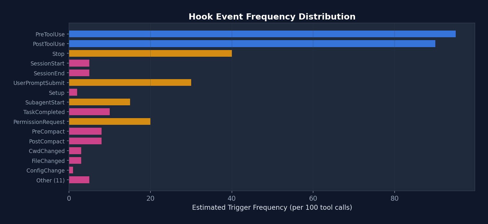
Figure 6-1: Estimated trigger frequency of the 26 hook events — PreToolUse and PostToolUse are the most frequent events (triggered on every tool call), while SessionStart/End are triggered only at session boundaries. This explains why PostToolUse internal hooks have a dedicated fast-path optimization (-70% latency).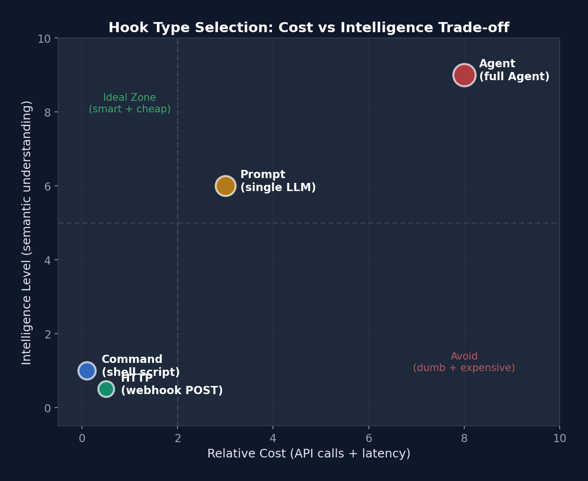
Figure 6-2: Cost–intelligence scatter plot of hook types — Command Hooks occupy the lower-left quadrant (inexpensive but simple), while Agent Hooks occupy the upper-right quadrant (expensive but intelligent). The dashed line delineates four quadrants: the upper-left is the "ideal zone" (intelligent and inexpensive), and the lower-right is the "avoid zone" (unintelligent and expensive).6.2 Hook Lifecycle and Type Selection
Selecting the appropriate hook type is a critical decision in harness customization. The following diagram assists in choosing the right type based on the use case:
quadrantChart
title Hook 类型选择矩阵
x-axis "低成本" --> "高成本"
y-axis "低智能" --> "高智能"
quadrant-1 "Agent Hook"
quadrant-2 "Prompt Hook"
quadrant-3 "Command Hook"
quadrant-4 "HTTP Hook"
"规则检查": [0.15, 0.2]
"Lint 运行": [0.25, 0.15]
"安全审查": [0.6, 0.85]
"测试验证": [0.75, 0.9]
"Slack 通知": [0.7, 0.1]
"审计日志": [0.65, 0.15]
"代码质量评分": [0.45, 0.7]
"合规检查": [0.5, 0.6]
Interpretation: The lower-left quadrant is the domain of Command Hooks — simple, inexpensive, and highly deterministic (e.g., lint checks, grep-based validation). The upper-right quadrant belongs to Agent Hooks — the most intelligent but also the most expensive (requiring a full Claude invocation to comprehend code semantics). HTTP Hooks reside in the lower-right — moderate cost (network latency) but low intelligence (merely POSTing data). Prompt Hooks occupy the center-upper region — a single LLM judgment call, less expensive than an Agent but more intelligent than a script.
Four Hook Types
Type 1: Command Hook (Shell Command)
{
"type": "command",
"command": "npm test -- --bail",
"if": "Bash(npm *)",
"shell": "bash",
"timeout": 30,
"statusMessage": "Running tests...",
"once": false,
"async": false,
"asyncRewake": false
}
Execution flow:
1. Path conversion (Windows: C:\Users\foo → /c/Users/foo)
2. Variable substitution (${CLAUDE_PROJECT_DIR}, ${CLAUDE_PLUGIN_ROOT})
3. Shell selection (Bash or PowerShell)
4. JSON input written to stdin
5. Line-by-line parsing of stdout (detecting async signals and prompt requests)
6. Exit code determines the result
Exit code semantics:
- 0: Success; stdout content is optionally displayed
- 2: Blocking error; stderr is displayed to both the model and the user
- Other: Non-blocking error; stderr is displayed only to the user
Type 2: Prompt Hook (LLM Evaluation)
{
"type": "prompt",
"prompt": "Review this code change for security vulnerabilities: $ARGUMENTS",
"model": "claude-sonnet-4-6",
"timeout": 60
}
This type uses an independent LLM call to evaluate the hook input. It is suitable for checks that require semantic understanding (e.g., code security review).
Type 3: HTTP Hook (External Service)
{
"type": "http",
"url": "https://hooks.slack.com/triggers/...",
"headers": {
"Authorization": "Bearer $SLACK_TOKEN"
},
"allowedEnvVars": ["SLACK_TOKEN"],
"timeout": 10
}
This type POSTs JSON to an external URL. The $VAR_NAME syntax within headers interpolates values from whitelisted environment variables. The allowedEnvVars field restricts which environment variables are accessible, preventing accidental leakage.
Type 4: Agent Hook (Agent Validator)
{
"type": "agent",
"prompt": "Verify that the test suite passes and no regressions were introduced",
"model": "claude-sonnet-4-6",
"timeout": 120
}
This type employs a full Claude Agent (with tool access) to validate operations. It is the most expensive but also the most powerful option — the Agent can read files, run tests, and inspect results.
6.3 Hook Configuration Structure
// ~/.claude/settings.json
{
"hooks": {
"PreToolUse": [
{
"matcher": "Write",
"hooks": [
{
"type": "command",
"command": "eslint --stdin --stdin-filename=$TOOL_INPUT_FILE_PATH",
"if": "Write(*.ts)"
}
]
},
{
"matcher": "Bash",
"hooks": [
{
"type": "command",
"command": "echo '{\"decision\": \"block\", \"reason\": \"sudo is not allowed\"}' ",
"if": "Bash(sudo *)"
}
]
}
],
"PostToolUse": [
{
"hooks": [
{
"type": "http",
"url": "https://audit.company.com/log",
"headers": { "Authorization": "Bearer $AUDIT_TOKEN" },
"allowedEnvVars": ["AUDIT_TOKEN"]
}
]
}
],
"SessionEnd": [
{
"hooks": [
{
"type": "command",
"command": "git stash",
"timeout": 10
}
]
}
]
}
}
6.4 Hook Input/Output Protocol
Input (JSON passed via stdin):
// Base fields common to all hooks
{
session_id: string,
transcript_path: string,
cwd: string,
permission_mode?: string,
agent_id?: string,
agent_type?: string,
}
// Fields specific to PreToolUse
{
tool_name: "Write",
tool_input: { file_path: "/src/index.ts", content: "..." },
tool_use_id: "toolu_xxx",
}
// Fields specific to PostToolUse
{
tool_name: "Bash",
tool_input: { command: "npm test" },
tool_response: { stdout: "...", exit_code: 0 },
tool_use_id: "toolu_xxx",
}
// UserPromptSubmit
{
prompt_text: "Fix the bug in login.ts",
}
// SessionStart
{
source: "startup" | "resume" | "clear" | "compact",
}
Output (JSON returned via stdout):
type HookJSONOutput = {
// Global control
continue?: boolean; // false = stop conversation
stopReason?: string;
decision?: 'approve' | 'block';
reason?: string;
systemMessage?: string; // Inject system message
suppressOutput?: boolean;
// Permission-related
permissionDecision?: 'allow' | 'deny' | 'ask';
// Event-specific
hookSpecificOutput?: {
updatedInput?: object; // Modify tool input (PreToolUse)
additionalContext?: string; // Inject additional context
watchPaths?: string[]; // Register file watchers
updatedMCPToolOutput?: unknown; // Modify MCP tool output
action?: 'accept' | 'decline' | 'cancel';
}
};
6.5 In-Depth Analysis of the Hook Execution Engine
The following presents the actual implementation of the hook execution engine from src/utils/hooks.ts:
// src/utils/hooks.ts — Actual code (simplified but preserving key logic)
async function* executeHooks({
hookInput, toolUseID, matchQuery, signal, timeoutMs,
toolUseContext, messages, forceSyncExecution, requestPrompt,
}) {
// Safety check 1: Global disable
if (shouldDisableAllHooksIncludingManaged()) return
if (isEnvTruthy(process.env.CLAUDE_CODE_SIMPLE)) return
// Safety check 2: Workspace trust
// All hooks require workspace trust (to prevent RCE vulnerabilities)
if (shouldSkipHookDueToTrust()) return
// Find matching hooks
const matchingHooks = await getMatchingHooks(
appState, sessionId, hookEvent, hookInput, tools,
)
if (matchingHooks.length === 0) return
// ===== Fast-path optimization =====
// If all hooks are internal callbacks (e.g., sessionFileAccessHooks, attributionHooks)
// skip span/progress/abortSignal/JSON processing → 70% performance improvement
const userHooks = matchingHooks.filter(h => !isInternalHook(h))
if (userHooks.length === 0) {
// 6.01µs → ~1.8µs per PostToolUse hit (-70%)
for (const { hook } of matchingHooks) {
if (hook.type === 'callback') {
await hook.callback(hookInput, toolUseID, signal, context)
}
}
return
}
// ===== Execute all hooks in parallel =====
// Each hook has an independent timeout
// ... aggregate results ...
}
Shell Execution of Command Hooks
// src/utils/hooks.ts — Key details of execCommandHook
async function execCommandHook(hook, hookEvent, hookName, jsonInput, signal, ...) {
// 1. Shell selection
// PowerShell: pwsh -NoProfile -NonInteractive -Command
// Bash: spawn(command, [], { shell: gitBashPath | true })
// 2. Variable substitution
// ${CLAUDE_PROJECT_DIR} → project directory
// ${CLAUDE_PLUGIN_ROOT} → plugin directory
// ${CLAUDE_PLUGIN_DATA} → plugin data directory
// ${user_config.X} → plugin configuration values
// 3. stdin write (UTF-8 encoded)
child.stdin.write(jsonInput + '\n', 'utf8')
// 4. Line-by-line stdout parsing
child.stdout.on('data', data => {
stdout += data
// ===== Prompt Request Protocol =====
// Hooks can request user input!
// Output line format: {"prompt": {"type": "text", "message": "Enter value:"}}
if (requestPrompt) {
for (const line of lines) {
const parsed = jsonParse(line.trim())
const validation = promptRequestSchema().safeParse(parsed)
if (validation.success) {
// Serialize async prompt handling
promptChain = promptChain.then(async () => {
const response = await requestPrompt(validation.data)
child.stdin.write(jsonStringify(response) + '\n', 'utf8')
})
continue
}
}
}
// ===== Async detection =====
// If the first line of output is {"async": true, ...}
// → move the process to the background, main thread continues
if (!initialResponseChecked) {
const firstLine = firstLineOf(stdout).trim()
const parsed = jsonParse(firstLine)
if (isAsyncHookJSONOutput(parsed) && !forceSyncExecution) {
executeInBackground({ processId, hookId, ... })
shellCommandTransferred = true
resolve({ stdout, stderr, output, status: 0 })
}
}
})
// 5. Wait for completion
// Critical: wait for both stdout and stderr streams to end before considering output complete
// Prevents race condition where 'close' event fires before all 'data' events are processed
await Promise.all([stdoutEndPromise, stderrEndPromise])
// 6. Strip processed prompt request lines
// Uses content matching rather than indices to prevent index drift causing prompt JSON leakage
const finalStdout = processedPromptLines.size === 0 ? stdout :
stdout.split('\n').filter(line => !processedPromptLines.has(line.trim())).join('\n')
return { stdout: finalStdout, stderr, output, status: exitCode }
}
Hook JSON Output Processing:
// Hook output is parsed as JSON, extracting decisions and side effects
function processHookJSONOutput({ json, ... }) {
const result = {}
// Global control
if (json.continue === false) result.preventContinuation = true
// Decision
if (json.decision === 'approve') result.permissionBehavior = 'allow'
if (json.decision === 'block') {
result.permissionBehavior = 'deny'
result.blockingError = { blockingError: json.reason || 'Blocked by hook' }
}
// Event-specific fields
if (json.hookSpecificOutput?.hookEventName === 'PreToolUse') {
if (json.hookSpecificOutput.updatedInput) {
result.updatedInput = json.hookSpecificOutput.updatedInput // Modify tool input
}
result.additionalContext = json.hookSpecificOutput.additionalContext
}
if (json.hookSpecificOutput?.hookEventName === 'PostToolUse') {
if (json.hookSpecificOutput.updatedMCPToolOutput) {
result.updatedMCPToolOutput = json.hookSpecificOutput.updatedMCPToolOutput
}
}
return result
}
6.6 Asynchronous Hook Protocol
// Hooks can signal asynchronous execution via the first line of JSON output:
// stdout first line: {"async": true, "asyncTimeout": 60000}
// The hook then runs in the background
// Or via configuration:
{ type: 'command', command: '...', async: true, asyncRewake: true }
// asyncRewake: if the exit code is 2, enqueue a notification to wake the model
// Use case: run a test suite in the background, notify the Agent on failure
6.6 Conditional Execution (the if Field)
The if field of a hook uses the same syntax as permission rules:
// Run only for git commands
{ "if": "Bash(git *)" }
// Run only for TypeScript file writes
{ "if": "Write(*.ts)" }
// Run only for npm commands
{ "if": "Bash(prefix:npm)" }
// Match all Bash invocations
{ "if": "Bash" }
Design Philosophy:
The hook system follows the principle of data-driven extensibility. Rather than requiring users to modify source code, all customization is accomplished through declarative configuration in settings.json. The four hook types cover the full spectrum from simple shell scripts to comprehensive Agent validation, with unified and straightforward exit code semantics.
Practical Advice: If you are using hooks for the first time, start with the simplest option — a PreToolUse command hook that prints the tool name and input. Once you become familiar with the input/output protocol, proceed to conditional execution (the
iffield) and HTTP callbacks. Agent hooks are the most powerful but also the most expensive (each invocation requires a full Agent execution); reserve them for scenarios where you genuinely need to "understand code semantics."Common Pitfall: Avoid performing heavy operations in Stop hooks. If your Stop hook injects a large number of tokens (e.g., an entire test report), it may trigger a prompt-too-long error. The recovery mechanism for prompt-too-long errors skips Stop hooks (to prevent a death spiral), which causes your logic to be silently bypassed. Keep Stop hooks lightweight — if you need to convey a large amount of information, write it to a file and let the Agent read it on its own.
Chapter 7: Sandbox & Security — The Safety Net
If the permission model is the fence and hooks are the security checkpoint, then the sandbox is the physical isolation wall. The former two operate at the logical level — they depend on software executing correctly. However, software may contain bugs, and logic can be bypassed. The sandbox enforces isolation at the operating system level: even if the Agent's code has vulnerabilities, it cannot access files or networks it should not have access to.
This embodies the classic security engineering principle of "Defense in Depth": never stake security on a single mechanism, but instead layer multiple defenses. Claude Code has six layers of defense, with the sandbox being the second-to-last (the final layer being hard-coded rejections).
The sandbox is the last line of defense in the harness. Even if both the permission model and hooks are bypassed, the sandbox still constrains what the Agent can do.
7.1 Sandbox Architecture
┌─────────────────────────────────────────────────┐
│ Claude Code │
│ │
│ BashTool.call() │
│ │ │
│ v │
│ shouldUseSandbox() │
│ │ │
│ ├─ 沙盒是否启用？ │
│ ├─ dangerouslyDisableSandbox 是否允许？ │
│ ├─ 命令是否在排除列表中？ │
│ │ │
│ v │
│ SandboxManager.wrapWithSandbox(command) │
│ │ │
│ v │
│ @anthropic-ai/sandbox-runtime │
│ │ │
│ ├─ 文件系统限制 │
│ ├─ 网络限制 │
│ └─ 进程限制 │
│ │
└─────────────────────────────────────────────────┘
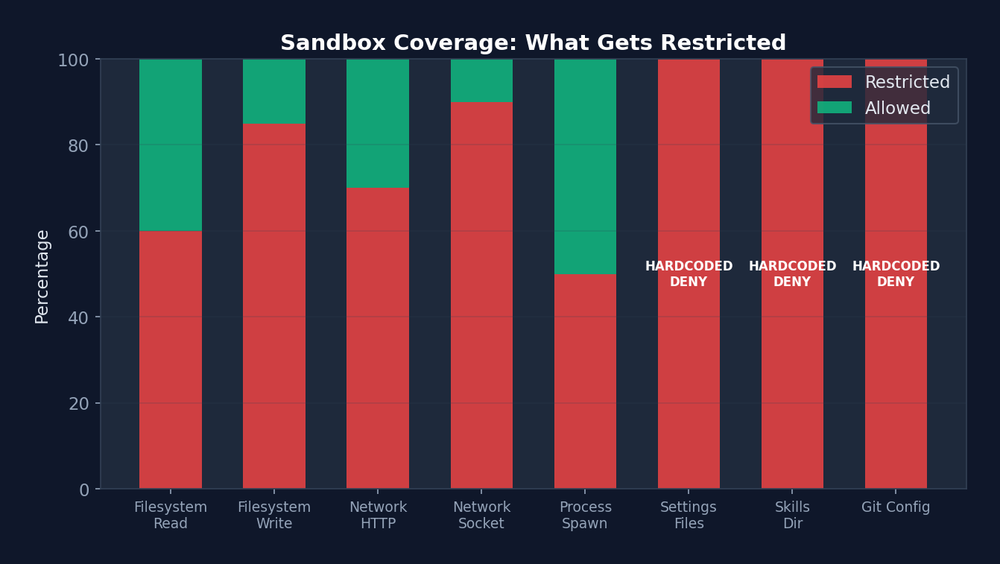
Figure 7-1: Sandbox coverage — Settings files, the skills directory, and Git configuration are restricted at 100% (hard-coded DENY) and cannot be relaxed through configuration. Filesystem write restrictions stand at 85% (most paths are restricted, with only the project directory permitted). Process spawn restrictions are the lowest (50%), as certain commands (e.g., Docker) require bypassing the sandbox.7.2 Three Dimensions of Restriction
Filesystem Restrictions
interface FsReadRestrictionConfig {
allowRead: string[]; // Path patterns allowed for reading
denyRead: string[]; // Path patterns denied for reading
}
interface FsWriteRestrictionConfig {
allowWrite: string[]; // Path patterns allowed for writing
denyWrite: string[]; // Path patterns denied for writing
}
// Path syntax:
// "/path" — Relative to the settings root path
// "//path" — Absolute path (from the filesystem root)
// "~/path" — User home directory
// "./path" — Current working directory
// "*.ext" — Wildcard pattern
Security hard-coding:
- .claude/settings*.json is always deny-write (to prevent sandbox escape)
- .claude/skills, .claude/commands are always deny-write (to prevent injection of malicious code)
- Bare repository files (HEAD, objects, refs) are detected and cleared after command execution
Network Restrictions
interface NetworkRestrictionConfig {
allowedDomains: string[]; // Allowed domain patterns
deniedDomains: string[]; // Denied domain patterns
allowUnixSockets?: boolean; // Unix socket access
allowLocalBinding?: boolean; // Local port binding
}
Command Exclusions
// settings.sandbox.excludedCommands
// Matching patterns:
// "cmd:" — Prefix match
// "cmd" — Exact match
// "cmd*" — Wildcard
// Note: This is **not** a security boundary
// It is merely a convenience feature (skipping the sandbox to avoid compatibility issues)
7.3 Path Resolution (Claude Code-Specific Conventions)
Claude Code uses special path prefix conventions that differ from the standard paths of sandbox-runtime:
// src/utils/sandbox/sandbox-adapter.ts — Actual code
export function resolvePathPatternForSandbox(
pattern: string, source: SettingSource,
): string {
// "//" prefix → Absolute path from the filesystem root
// "//.aws/**" → "/.aws/**"
if (pattern.startsWith('//')) {
return pattern.slice(1)
}
// "/" prefix → Relative to the settings file directory
// "/foo/**" in permission rules → "${settings_root}/foo/**"
if (pattern.startsWith('/') && !pattern.startsWith('//')) {
const root = getSettingsRootPathForSource(source)
return resolve(root, pattern.slice(1))
}
// Other patterns (~/path, ./path, path) are passed through directly
// sandbox-runtime's normalizePathForSandbox handles them
return pattern
}
Sandbox initialization flow:
// Sandbox initialization is asynchronous but must complete before the first command executes
async function initialize(sandboxAskCallback?) {
if (initializationPromise) return initializationPromise
if (!isSandboxingEnabled()) return
// Wrap the callback to enforce the allowManagedDomainsOnly policy
const wrappedCallback = sandboxAskCallback ? async (hostPattern) => {
if (shouldAllowManagedSandboxDomainsOnly()) {
logForDebugging(`Blocked: ${hostPattern.host} (allowManagedDomainsOnly)`)
return false
}
return sandboxAskCallback(hostPattern)
} : undefined
// Create the Promise (synchronously before any await, to prevent race conditions)
initializationPromise = (async () => {
// Detect worktree main repository path (invariant during session; cached)
if (worktreeMainRepoPath === undefined) {
worktreeMainRepoPath = await detectWorktreeMainRepoPath(getCwdState())
}
const settings = getSettings_DEPRECATED()
const runtimeConfig = convertToSandboxRuntimeConfig(settings)
await BaseSandboxManager.initialize(runtimeConfig, wrappedCallback)
// Subscribe to settings changes to dynamically update sandbox configuration
settingsSubscriptionCleanup = settingsChangeDetector.subscribe(() => {
const newConfig = convertToSandboxRuntimeConfig(getSettings_DEPRECATED())
BaseSandboxManager.updateConfig(newConfig)
})
})()
return initializationPromise
}
7.4 Conversion from Permission Rules to Sandbox Configuration
Claude Code converts its permission rule syntax into the configuration format expected by sandbox-runtime:
// Permission rules → Sandbox path conversion
// Edit(/path/to/dir/*) → sandbox.filesystem.allowWrite
// Read(/patterns) → sandbox.filesystem.allowRead
// WebFetch(domain:example.com) → sandbox.network.allowedDomains
function convertToSandboxConfig(
permissionRules: PermissionRule[],
sandboxSettings: SandboxSettings,
): SandboxRuntimeConfig {
// Merge permission rules and sandbox settings
// Allow rules from permission rules → sandbox allow lists
// Sandbox settings map directly
// Deny rules always include security hard-coding
}
7.4 Sandbox Enablement Check
function isSandboxingEnabled(): boolean {
return isSupportedPlatform() // macOS, Linux, WSL2+
&& checkDependencies().errors.length === 0 // bubblewrap, socat
&& isPlatformInEnabledList() // sandbox.enabledPlatforms
&& getSandboxEnabledSetting(); // User setting
}
// Dependency check (with caching)
function checkDependencies(): { errors: string[], warnings: string[] } {
// Check: bubblewrap executable
// Check: socat executable
// Check: cap_setfcap capability
}
7.5 dangerouslyDisableSandbox
// BashTool input parameter
{
command: "docker build .",
dangerouslyDisableSandbox: true // Skip sandbox
}
// Only takes effect when the setting permits it:
// settings.sandbox.allowUnsandboxedCommands = true
// Design intent: Certain commands (e.g., Docker) are incompatible with the sandbox
// However, this must be explicitly requested and documented
Design Philosophy:
The sandbox design adheres to the Defense in Depth principle. Even if the permission model has approved an operation, the sandbox still constrains the "blast radius" of that operation. Critical security files (settings, skills) are hard-coded as non-writable — a security guarantee that does not depend on configuration.
Why are settings files hard-coded as non-writable? Consider the following scenario: the Agent discovers that the sandbox restricts its operations, so it "cleverly" modifies
settings.jsonto disable the sandbox and proceeds. This constitutes a sandbox escape attack. Claude Code prevents this by hard-coding deny-write for.claude/settings*.json— even if all other security layers are bypassed, this rule remains in effect. This embodies the security engineering principle that "untrusted code must not be permitted to modify trust boundaries."
Chapter 8: Context Engineering — The Art of Information Management
The preceding five chapters addressed "what the Agent does" and "what the Agent cannot do." This chapter adopts a different perspective — "what the Agent knows."
Imagine you are a new employee on your first day at work. If no one informs you of the company's coding standards, architectural decisions, or known bugs, the code you write will most likely fail to meet requirements. The same holds for the Agent — its performance is directly determined by the information it can "see."
Context Engineering is the discipline of managing the Agent's "field of vision." It addresses three questions: 1. What should the Agent know? (CLAUDE.md, the memory system) 2. When should it be informed? (on-demand loading, prefetching) 3. What happens when there is too much information? (the four-level compaction pipeline)
Claude Code's design in this area is particularly elegant — a 200-line memory index, a four-level compaction pipeline, and a parallel prefetch mechanism together constitute the most sophisticated Agent context management system in the industry.
Context Engineering is the first pillar of Harness Engineering. It governs what information enters the model's context window, when it enters, and in what form.
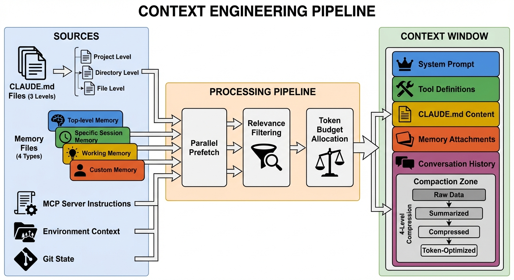
Figure 8-1: The context engineering pipeline — Information flows from multiple sources (CLAUDE.md, memory files, MCP instructions, environmental context) into the model's context window, passing through parallel prefetching, relevance filtering, and token budget allocation. The right side illustrates the composition of the context window and the four compaction tiers.8.1 Quantitative Analysis: Context Window Budget Allocation
The typical budget allocation for Claude Code's context window (assuming 200K tokens):
| Component | Estimated Token Share | Size | Subject to Compaction |
|---|---|---|---|
| System prompt (base) | ~5-8% | 10-16K | No (cache prefix) |
| Tool definitions (15 core + N MCP) | ~8-15% | 16-30K | No (cache prefix) |
| CLAUDE.md content | ~2-5% | 4-10K | No |
| MCP server instructions | ~1-3% | 2-6K | No |
| Memory attachments | ~1-2% | 2-4K | No (attached on demand) |
| Conversation history | ~60-80% | 120-160K | Yes (four-level pipeline) |
| Reserved space (model output) | ~5-10% | 10-20K | N/A |
Key Insight: Conversation history occupies 60-80% of the context space, which is precisely why the compaction pipeline is so critical. The system prompt and tool definitions account for 13-23% — this is why lazy tool loading (ToolSearch) is valuable: loading 15 out of 43 tools can save approximately 8% of context space, which in long conversations equates to an additional 16K tokens of conversation history.
Cache Economics: The system prompt and tool definitions serve as cache prefixes (~30-46K tokens). Anthropic's API prompt cache does not charge input fees for prefix-matched portions. At $3/M input tokens, each API call saves approximately $0.0001-0.00014. A typical session involves 20-50 API calls, yielding total savings of approximately $0.002-0.007/session. At scale (millions of daily active users), this represents a significant cost optimization.
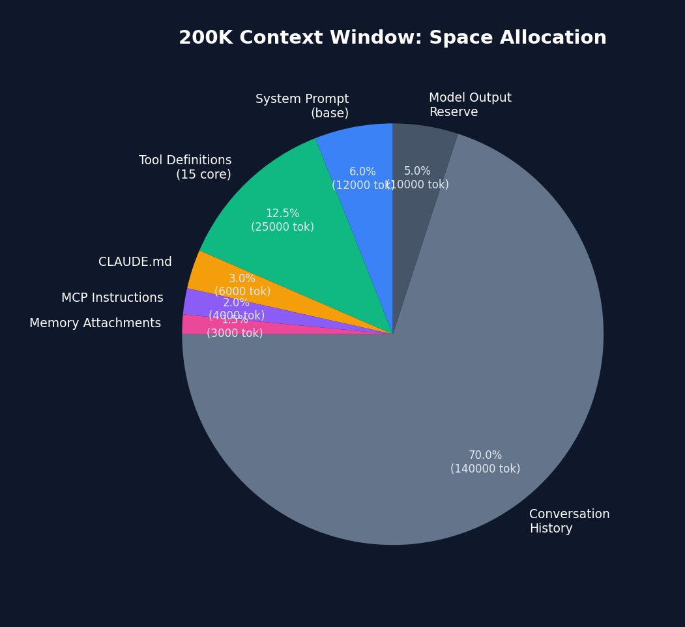
Figure 8-2: Space allocation within the 200K context window — Conversation history occupies 70% (140K tokens) and is the primary target of the compaction pipeline. The system prompt plus tool definitions total approximately 18.5%, representing the primary beneficiary of prompt caching.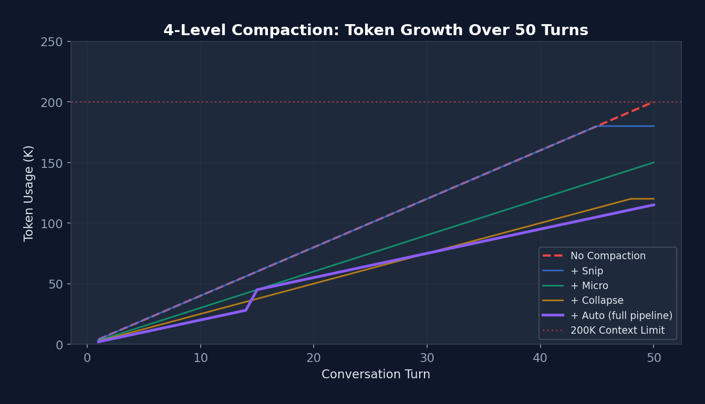
Figure 8-3: Token growth curve of the four-level compaction pipeline (50 conversation turns) — The red dashed line shows that without compaction, the 200K limit is breached at turn 45. The purple line (full pipeline) shows tokens dropping to 45K after Autocompact triggers at turn 15, followed by gradual growth. This enables Claude Code to handle conversations exceeding 100 turns without interruption.8.2 CLAUDE.md — Project-Level Persistent Context
CLAUDE.md is the core context mechanism of Claude Code. It is a Markdown file that provides project-level persistent context:
# CLAUDE.md
## 项目概述
这是一个 Next.js 14 应用，使用 TypeScript + Tailwind CSS。
## 架构约束
- 组件放在 src/components/
- API 路由放在 src/app/api/
- 不要使用 class 组件
- 所有 API 调用必须使用 fetch，不要用 axios
## 命名规范
- 组件：PascalCase
- 工具函数：camelCase
- 常量：UPPER_SNAKE_CASE
## 测试
- 运行测试: npm test
- 测试框架: Jest + React Testing Library
- 覆盖率要求: >80%
## 已知问题
- #123: 登录页面在 Safari 下有布局问题
- 不要修改 legacy/ 目录下的文件
Loading hierarchy:
~/.claude/CLAUDE.md # Global (all projects)
.claude/CLAUDE.md # Project-level
.claude/CLAUDE.md.local # Local override (not committed to git)
子目录/CLAUDE.md # Directory-level (loaded upon entry)
8.2 System Prompt Construction Pipeline
// src/QueryEngine.ts — System prompt construction
function buildSystemPrompt(): SystemPrompt {
const parts = [];
// 1. Base system prompt (tool descriptions, behavioral guidelines)
parts.push(getBaseSystemPrompt());
// 2. Tool definitions
for (const tool of tools) {
parts.push(tool.prompt(context));
}
// 3. CLAUDE.md content
parts.push(loadClaudeMd());
// 4. MCP server instructions
for (const mcp of mcpClients) {
parts.push(mcp.instructions);
}
// 5. Custom system prompt (user override)
if (customPrompt) parts.push(customPrompt);
// 6. Memory mechanism prompt (if memory system is enabled)
if (memoryEnabled) parts.push(memoryMechanicsPrompt);
return asSystemPrompt(parts.join('\n'));
}
8.3 Memory System
Claude Code implements a file-based persistent memory system located in src/memdir/.
Four Memory Types
type MemoryType =
| 'user' // User role, preferences, knowledge level
| 'feedback' // Workflow guidance (what to do / what to avoid)
| 'project' // Ongoing work, goals, deadlines
| 'reference'; // Pointers to external systems
Memory File Format
---
name: user-prefers-terse-responses
description: 用户不喜欢冗长的总结，希望简洁直接的回复
type: feedback
---
不要在每次回复末尾总结刚做的事情——用户可以自己读 diff。
**Why:** 用户明确表示不喜欢尾部总结。
**How to apply:** 所有回复保持简洁，不加尾部总结段落。
Memory Index (MEMORY.md)
- [User Role](user_role.md) — 高级 Go 工程师，React 新手
- [Terse Responses](feedback_terse.md) — 不要尾部总结
- [Auth Rewrite](project_auth.md) — 合规驱动的认证中间件重写
- [Bug Tracker](reference_linear.md) — 管道 bug 在 Linear INGEST 项目
Memory Scanning and Attachment
// src/memdir/memoryScan.ts
function scanMemories(memoryDir: string): MemoryHeader[] {
// Scan the ~/.claude/memory/ directory
// Read the frontmatter of each .md file
// Sort by modification time (most recent first)
// Upper limit: MAX_MEMORY_FILES = 200
return headers;
}
// Integration with the query loop
// 1. Begin memory scan during streaming response (prefetch)
startRelevantMemoryPrefetch();
// 2. Filter relevant memories and create attachment messages
const attachments = getAttachmentMessages(memories, userMessage);
// 3. Append to user message
messages.push(...attachments);
Actual Implementation of Memory Scanning
// src/memdir/memoryScan.ts — Actual code
// Single-pass traversal: stat + read merged (reducing system calls)
// For the common case (N <= 200), this halves system calls compared to stat-sort-then-read
export async function scanMemoryFiles(
memoryDir: string, signal: AbortSignal,
): Promise<MemoryHeader[]> {
try {
const entries = await readdir(memoryDir, { recursive: true })
const mdFiles = entries.filter(
f => f.endsWith('.md') && basename(f) !== 'MEMORY.md',
)
const headerResults = await Promise.allSettled(
mdFiles.map(async (relativePath): Promise<MemoryHeader> => {
const filePath = join(memoryDir, relativePath)
// Read only the first FRONTMATTER_MAX_LINES lines (optimized for large files)
const { content, mtimeMs } = await readFileInRange(
filePath, 0, FRONTMATTER_MAX_LINES, undefined, signal,
)
const { frontmatter } = parseFrontmatter(content, filePath)
return {
filename: relativePath,
filePath,
mtimeMs,
description: frontmatter.description || null,
type: parseMemoryType(frontmatter.type),
}
}),
)
return headerResults
.filter((r): r is PromiseFulfilledResult<MemoryHeader> =>
r.status === 'fulfilled')
.map(r => r.value)
.sort((a, b) => b.mtimeMs - a.mtimeMs) // Most recent first
.slice(0, MAX_MEMORY_FILES) // Upper limit of 200
} catch {
return [] // Graceful degradation when the directory does not exist
}
}
Memory manifest formatting:
// Used for memory selection prompts and extraction Agent prompts
export function formatMemoryManifest(memories: MemoryHeader[]): string {
return memories.map(m => {
const tag = m.type ? `[${m.type}] ` : ''
const ts = new Date(m.mtimeMs).toISOString()
return m.description
? `- ${tag}${m.filename} (${ts}): ${m.description}`
: `- ${tag}${m.filename} (${ts})`
}).join('\n')
}
Design Philosophy:
The memory system adheres to the principle of explicit over implicit. Memories are structured Markdown files (not a database), with well-defined types and metadata. The MEMORY.md index is capped at 200 entries to prevent memory bloat. Memory scanning executes in parallel with API calls (prefetching), adding no additional latency.
The use of Promise.allSettled (rather than Promise.all) ensures that a single corrupted memory file does not cause the entire scan to fail — this is a manifestation of defensive programming within the harness.
8.4 Context Compaction Strategy
(See Section 3.3 for the four-level compaction pipeline)
Key additions:
Full transcript preservation strategy:
├─ Complete transcript saved to disk before each autocompact
├─ Path: ~/.claude/history/<session_id>/
├─ Purpose: --resume recovery, auditing, debugging
└─ Not involved in compaction decisions (backup only)
Budget tracking across compactions:
├─ taskBudgetRemaining captured before compaction
├─ Accumulated across multiple compactions
└─ Ensures total expenditure does not exceed the budget
8.5 Dynamic Context
// src/context.ts — Environmental context collection
function collectContext(): UserContext {
return {
currentDate: new Date(),
platform: process.platform,
shell: process.env.SHELL,
osVersion: getOSVersion(),
modelInfo: getModelInfo(),
cwd: process.cwd(),
gitState: getGitState(), // Branch, status, remote
terminalSize: getTerminalSize(),
// ...additional environment information
};
}
Chapter 9: Settings & Configuration — The Tunability of the Harness
Up to this point, we have examined the loop, tools, permissions, hooks, the sandbox, and context — all of which are components with adjustable parameters. But where are these parameters stored? Which settings take precedence? Can an enterprise administrator lock down certain settings?
The settings system is the "control panel" of the harness. A well-designed control panel must allow beginners to get started out of the box, enable advanced users to fine-tune parameters, and permit enterprise administrators to enforce policies. Claude Code addresses this challenge elegantly through a 7-level hierarchical settings system.
The settings system determines how the behavior of the harness is adjusted and customized.
9.1 settings.json Structure
{
// ===== Permissions =====
"permissions": {
"allow": ["Read", "Glob", "Grep", "Bash(git *)"],
"deny": ["Bash(sudo *)", "Bash(rm -rf *)"],
"ask": ["Write(*.env)", "Bash(npm publish)"],
"defaultMode": "default",
"additionalDirectories": ["/shared/libs"],
"disableBypassPermissionsMode": "disable",
"disableAutoMode": "disable"
},
// ===== Hooks =====
"hooks": {
"PreToolUse": [
{
"matcher": "Bash",
"hooks": [
{
"type": "command",
"command": "check-safety.sh",
"if": "Bash(rm *)"
}
]
}
]
},
// ===== Sandbox =====
"sandbox": {
"enabled": true,
"autoAllowBashIfSandboxed": true,
"allowUnsandboxedCommands": false,
"fsRead": { "allow": ["**"], "deny": ["/etc/shadow"] },
"fsWrite": { "allow": ["./**"], "deny": [".env", "*.key"] },
"network": {
"allowedDomains": ["*.github.com", "registry.npmjs.org"],
"deniedDomains": ["*.malware.com"]
},
"excludedCommands": ["docker", "podman"],
"lockedByPolicy": false
},
// ===== Other =====
"model": "claude-sonnet-4-6",
"env": {
"NODE_ENV": "development"
},
"attribution": "Co-Authored-By: Claude",
"cleanupPeriodDays": 30,
"defaultShell": "bash",
"allowedMcpServers": ["@anthropic/mcp-*"],
"deniedMcpServers": ["*-untrusted"]
}
9.2 Hierarchical Loading
// src/utils/settings/settings.ts
function loadSettings(): MergedSettings {
// Merge in order of ascending priority
const layers = [
loadUserSettings(), // ~/.claude/settings.json
loadProjectSettings(), // .claude/settings.json
loadLocalSettings(), // .claude/settings.json.local
loadPolicySettings(), // Organization policy
loadManagedSettings(), // MDM/Enterprise
loadFlagSettings(), // Environment variables
loadCliArgSettings(), // Command-line arguments
];
return deepMerge(layers); // Later entries override earlier ones
}
Enterprise managed settings:
"sandbox": {
"enabled": true,
"autoAllowBashIfSandboxed": true,
"allowUnsandboxedCommands": false,
"fsRead": { "allow": ["**"], "deny": ["/etc/shadow"] },
"fsWrite": { "allow": ["./**"], "deny": [".env", "*.key"] },
"network": {
"allowedDomains": ["*.github.com", "registry.npmjs.org"],
"deniedDomains": ["*.malware.com"]
},
"excludedCommands": ["docker", "podman"],
"lockedByPolicy": false
},
// ===== Other =====
"model": "claude-sonnet-4-6",
"env": {
"NODE_ENV": "development"
},
"attribution": "Co-Authored-By: Claude",
"cleanupPeriodDays": 30,
"defaultShell": "bash",
"allowedMcpServers": ["@anthropic/mcp-*"],
"deniedMcpServers": ["*-untrusted"]
}
9.2 Hierarchical Loading
// src/utils/settings/settings.ts
function loadSettings(): MergedSettings {
// Merge in order of ascending priority
const layers = [
loadUserSettings(), // ~/.claude/settings.json
loadProjectSettings(), // .claude/settings.json
loadLocalSettings(), // .claude/settings.json.local
loadPolicySettings(), // Organization policy
loadManagedSettings(), // MDM/Enterprise
loadFlagSettings(), // Environment variables
loadCliArgSettings(), // Command-line arguments
];
return deepMerge(layers); // Later entries override earlier ones
}
Enterprise Managed Settings:
/managed/managed-settings.json
├─ Base managed settings
├─ Distributed via MDM (Jamf, Intune, etc.)
└─ Can lock sandbox: { "sandbox": { "lockedByPolicy": true } }
/managed/managed-settings.d/
├─ security-policy.json # Security policy drop-in
├─ compliance-rules.json # Compliance rules drop-in
└─ (Loaded in alphabetical order; later entries override earlier ones)
9.3 Schema Validation
// src/schemas/ — Zod validation
const SettingsSchema = z.object({
permissions: PermissionsSchema.optional(),
hooks: HooksSchema.optional(),
sandbox: SandboxSchema.optional(),
model: z.string().optional(),
env: z.record(z.string()).optional(),
// ...
}).passthrough(); // Preserve unknown fields (backward compatibility)
.passthrough() is a critical design decision: older settings files may contain fields that newer versions do not recognize. passthrough() preserves these fields without raising errors, ensuring backward compatibility.
9.4 Deep Dive: The Settings Merge Algorithm
The settings merge process appears straightforward but in fact involves carefully crafted custom logic:
// src/utils/settings/settings.ts — actual code
// Array merge strategy: concatenation + deduplication (not replacement)
function settingsMergeCustomizer(objValue, srcValue) {
if (Array.isArray(objValue) && Array.isArray(srcValue)) {
return mergeArrays(objValue, srcValue) // concat + uniq
}
// Non-arrays: scalars are overwritten, objects are recursively merged
}
Why concatenate arrays instead of replacing them? Consider permission rules: an enterprise policy defines
deny: ["Bash(sudo *)"], and a project-level setting definesdeny: ["Bash(rm -rf *)"]. If replacement were used, the project's deny list would overwrite the enterprise's deny list. By concatenating and deduplicating, the final deny list contains both rules — which is the correct security behavior.
9.5 The Drop-in Pattern for Managed Settings
// A systemd-style drop-in directory pattern:
// managed-settings.json ← Base (lowest priority)
// managed-settings.d/
// 10-otel.json ← Observability team's configuration
// 20-security.json ← Security team's configuration
// 30-compliance.json ← Compliance team's configuration
// Sorted alphabetically and merged; later entries override earlier ones
Why use drop-in files instead of a single file? In large enterprises, different teams manage different configuration dimensions. The security team is responsible for deny rules, the platform team manages MCP allowlists, and the compliance team handles data retention policies. The drop-in pattern allows each team to independently manage its own configuration fragments without coordinating edits to the same file — consistent with Linux system administration best practices.
9.6 Defensive Cache Cloning
// Actual code: returns a clone when reading from cache
// Reason: lodash's mergeWith() mutates the first argument
// If the cached object were returned directly, the caller's merge operations would pollute the cache
// The next reader would see corrupted data — an extremely difficult bug to diagnose
const cached = getCachedParsedFile(path)
return cached ? structuredClone(cached) : loadAndCache(path)
Design Pattern Analysis: Postel's Law (Be Liberal in What You Accept)
This exemplifies a classic internet engineering principle — "Be conservative in what you send, be liberal in what you accept." Settings files are edited by users and may contain typos, deprecated fields, or experimental configurations.
passthrough()ensures that Claude Code does not crash when encountering such "imperfect" input, silently ignoring unrecognized fields. This is particularly important in Harness Engineering because settings files persist across versions — when a user upgrades Claude Code, their existing settings should not be rejected by the new version.
Chapter 10: MCP Integration — Extending the Boundaries of the Harness
Claude Code ships with 43+ built-in tools, but the demands of the real world are boundless — some users need to query databases, others need to operate Kubernetes clusters, and still others need to send Slack messages. Anthropic cannot anticipate every possible use case.
MCP (Model Context Protocol) is the solution: a standard protocol that enables anyone to write a "tool server" that Claude Code can automatically discover and use. This is analogous to the USB protocol — rather than redesigning the computer for every peripheral device, a single unified interface suffices.
In this chapter, we examine how Claude Code connects to MCP servers via six transport protocols and how it seamlessly integrates external tools into its own permission and hook systems.
MCP (Model Context Protocol) enables Claude Code to connect to external tool servers, dramatically extending the capabilities of the Harness.
10.1 Six Transport Protocols
flowchart LR
CC[Claude Code] --> stdio["Stdio\nChild process stdin/stdout"]
CC --> sse["SSE\nServer-Sent Events"]
CC --> http["Streamable HTTP\nHTTP streaming"]
CC --> ws["WebSocket\nTLS/proxy support"]
CC --> inproc["InProcess\nIn-memory TS module"]
CC --> sdk["SdkControl\nSDK daemon"]
stdio --> local["Local MCP servers\n(filesystem, git)"]
sse --> remote["Remote MCP servers\n(Slack, Linear)"]
http --> remote
ws --> remote
inproc --> chrome["Chrome/Computer Use\nAvoids 325MB subprocess"]
sdk --> daemon["SDK Daemon\nControl plane"]
classDef transport fill:#dbeafe,stroke:#2563eb,color:#1e3a5f
classDef server fill:#dcfce7,stroke:#16a34a,color:#14532d
class stdio,sse,http,ws,inproc,sdk transport
class local,remote,chrome,daemon server
Source Code Annotation Analysis: A critical comment in the MCP client implementation reads — "Run Chrome MCP server in-process to avoid spawning ~325MB subprocess." This reveals the true rationale behind the InProcess transport: certain MCP servers (such as the Chrome browser controller) incur prohibitive memory overhead when launched as separate processes. Through InProcess transport, they run within the Claude Code process, sharing its memory space.
// src/services/mcp/client.ts — Six transport types
type MCPTransport =
| StdioClientTransport // Child process (stdin/stdout)
| SSEClientTransport // Server-Sent Events
| StreamableHTTPTransport // HTTP streaming
| WebSocketTransport // WebSocket (TLS/proxy support)
| InProcessTransport // In-memory (TypeScript module)
| SdkControlTransport; // SDK daemon control
10.2 MCP Configuration
// ~/.claude/mcp.json (global)
{
"mcpServers": {
"filesystem": {
"command": "npx",
"args": ["-y", "@modelcontextprotocol/server-filesystem", "/path/to/dir"],
"env": {}
},
"github": {
"command": "npx",
"args": ["-y", "@modelcontextprotocol/server-github"],
"env": { "GITHUB_TOKEN": "ghp_..." }
}
}
}
// .claude/mcp.json (project-level, merged with mcp.json)
{
"mcpServers": {
"database": {
"command": "python",
"args": ["mcp_db_server.py"],
"env": { "DB_URL": "postgresql://..." }
}
}
}
10.3 MCP Tool Execution
// MCP tool execution flow
async function callMcpTool(
server: MCPClient,
toolName: string,
input: object,
): Promise<ToolResult> {
// 1. Call the MCP server
const result = await server.callTool(toolName, input);
// 2. Handle streaming progress
if (result.isStreaming) {
for await (const progress of result.stream) {
yield progress;
}
}
// 3. Result truncation and validation
const truncated = truncateIfNeeded(result);
// 4. OAuth token refresh (if needed)
if (result.error?.type === 'auth_error') {
await refreshOAuthToken(server);
return callMcpTool(server, toolName, input); // Retry
}
// 5. Binary content persistence (large outputs)
if (isBinaryContent(result)) {
await persistBinaryContent(result);
}
return truncated;
}
10.4 Deep Dive: MCP Connection Lifecycle
// src/services/mcp/client.ts — actual connection orchestration
// Core logic of getMcpToolsCommandsAndResources():
// 1. Partition by transport type with different concurrency levels
// Local servers (stdio): low concurrency (batch ~3) to avoid process spawn contention
// Remote servers (sse/http/ws): high concurrency (batch ~20), network connections only
// 2. Three-level filtering
// Level 1: Disabled check (marked as disabled in settings)
// Level 2: Authentication cache check (15-minute TTL failure cache)
// Level 3: Actual connection attempt (memoized by name + config hash)
// 3. Streaming result callbacks (no waiting for all servers to connect)
// Each server triggers onConnectionAttempt() immediately upon connection
// The UI can incrementally render connected servers
Race Condition Protection for the Authentication Cache: A source code comment reads "Serialize cache writes through a promise chain to prevent concurrent read-modify-write races when multiple servers return 401 in the same batch." This addresses a classic concurrency problem — when 10 MCP servers return 401 simultaneously, the cache file would become corrupted without serialized writes. The solution: all write operations are serialized through a Promise chain, while read operations share a single memoized Promise.
10.5 MCP Configuration Deduplication Strategy
Configuration source priority:
Manual configuration > Plugin auto-discovery > Claude.ai browser connector
Deduplication rules (determining "the same server"):
stdio servers: command array is identical
remote servers: URL is identical
Name conflicts: later entries override earlier ones
Enterprise policy:
allowlist + denylist with three matching modes:
Name matching: exact server name
Command matching: stdio server command array
URL matching: wildcard patterns (https://*/api/* → regex)
denylist is merged from all sources (always in effect)
allowlist is governed by shouldAllowManagedMcpServersOnly() policy
10.6 Integration of MCP Tools with Built-in Tools
// MCP tools and built-in tools share a single tool pool
// assembleToolPool() merges both
// Deduplication rule: built-in tools take precedence
// If an MCP server provides a tool with the same name, the built-in version is retained
// Deny rules apply equally to MCP tools
// In settings.json:
{
"permissions": {
"deny": ["mcp__untrusted-server"] // Block an entire MCP server
},
"allowedMcpServers": ["@official/*"],
"deniedMcpServers": ["*-untrusted"]
}
10.5 MCP Skills Discovery
// Optional feature: MCP_SKILLS
// Discover and register Skills from MCP servers
// skills/mcpSkills.ts
// MCP servers can expose Skills (not just Tools)
// Skills are higher-level workflow abstractions
// Registered via the skills builder pattern
Chapter 11: Sub-Agent System — Multi-Agent Orchestration
Up to this point, our Harness has contained only a single Agent. However, for complex tasks, a single Agent is often insufficient — it may need to search different parts of the codebase simultaneously, or have a dedicated "reviewer" inspect code it has written.
This is analogous to a company: the CEO cannot personally handle every task and must delegate to team members. But delegation is not simply a matter of saying "go do it" — it requires clearly defined permission scopes (which resources can you access), information isolation (do not let noise from one subtask pollute another), and result reporting (give me only the summary, not the raw data).
The Claude Code sub-agent system is designed precisely along these lines. Each sub-agent has its own message history, tool set, permission mode, and token budget — fully isolated, returning only a summary upon completion.
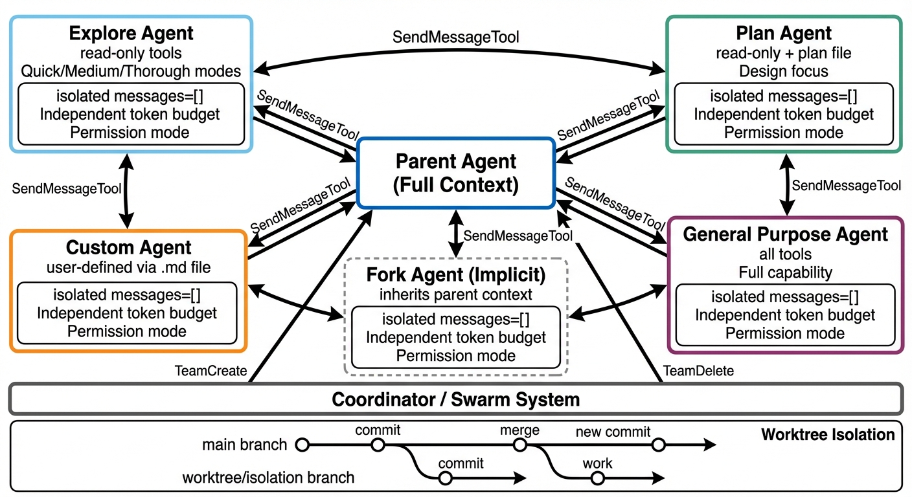
Figure 11-1: Multi-agent orchestration architecture — The parent Agent spawns isolated sub-agents (Explore/Plan/General/Custom/Fork) via AgentTool, each with its own independent message history, token budget, and permission mode. The bottom section illustrates the Coordinator/Swarm system and Worktree isolation.11.1 Agent Tool
Agent Tool is the sub-agent spawning mechanism in Claude Code, located in src/tools/AgentTool/.
// Agent definition structure
interface AgentDefinition {
agentType: string; // e.g., "Explore", "Plan", "general-purpose"
description: string; // Purpose description
whenToUse: string; // When to use
tools: string[] | '*'; // Available tools ('*' = all)
maxTurns?: number; // Maximum turn limit
model?: string | 'inherit'; // Model selection
permissionMode?: PermissionMode; // Permission mode
getSystemPrompt(): string; // System prompt generator
}
11.2 Agent Types
┌──────────────────────────────────────────────────┐
│ Agent Types │
│ │
│ general-purpose (General Agent) │
│ ├─ Tools: all (*) │
│ ├─ Use case: complex multi-step tasks │
│ └─ Model: inherited from parent │
│ │
│ Explore (Exploration Agent) │
│ ├─ Tools: read-only (Read, Glob, Grep, │
│ │ WebFetch, ...) │
│ ├─ Use case: codebase exploration, search │
│ ├─ Cannot: edit, write, or run commands │
│ └─ Three depth levels: quick, medium, │
│ very thorough │
│ │
│ Plan (Planning Agent) │
│ ├─ Tools: read-only + Plan file writing │
│ ├─ Use case: designing implementation plans │
│ └─ Cannot: execute actual code modifications │
│ │
│ custom (Custom Agent) │
│ ├─ Definition: ~/.claude/agents/<name>.md │
│ ├─ Frontmatter: tools, model, maxTurns │
│ └─ System prompt: Markdown body │
│ │
│ Fork (Implicit Fork Agent) │
│ ├─ Experimental feature │
│ ├─ Automatically forked from parent context │
│ └─ Inherits parent's tools and permissions │
│ │
└──────────────────────────────────────────────────┘
11.3 Sub-Agent Spawning Process
sequenceDiagram
participant P as Parent Agent
participant AT as AgentTool
participant MCP as MCP Server
participant C as Sub-Agent
participant T as Sub-Agent Tool Set
P->>AT: Agent(type:"Explore", prompt:"...")
AT->>AT: Load Agent definition
AT->>MCP: Check MCP server readiness
alt MCP not ready
loop Poll every 500ms (max 30s)
AT->>MCP: Connection status?
end
end
AT->>C: Create isolated context
Note over C: messages = []<br/>Independent token budget<br/>Independent compression pipeline
AT->>T: Assemble tool set (as specified or inherited)
C->>C: Independent queryLoop()
loop Agent execution
C->>T: Tool call
T-->>C: Tool result
end
C-->>AT: Return summary
AT-->>P: Summary (excluding sub-agent's full history)
Source Code Annotation Analysis: A critical comment in the AgentTool source reads — "Fork children keep the Agent tool in their pool for cache-identical tool defs, so reject fork attempts at call time." This means that although Fork sub-agents retain the Agent tool in their tool pool (to maintain cache-identical tool definitions with the parent), recursive Fork attempts are rejected at runtime. The primary checking mechanism is
querySource(unaffected by compression), with message scanning as a fallback. This prevents the runaway scenario of "agents infinitely spawning agents."
Parent Agent request: Agent(type: "Explore", prompt: "...")
│
v
AgentTool.call()
│
├─ 1. Load Agent definition (built-in or custom)
├─ 2. Construct isolated message array (messages = [])
├─ 3. Select tool set (specified in definition or inherited)
├─ 4. Set permission mode (bubble / default / inherited)
├─ 5. Launch independent query loop
│ └─ Sub-agent has its own:
│ ├─ Message history
│ ├─ Tool context
│ ├─ Compression pipeline
│ └─ Token budget
├─ 6. Collect output
└─ 7. Return summary to parent Agent
Design Philosophy:
The core design principle of sub-agents is context isolation. Each sub-agent begins with an empty message list and returns only a summary upon completion. This prevents: - Noise from subtasks polluting the parent's context - Token budgets being exhausted by exploratory queries - Permission leakage (sub-agents' tool sets can be more restricted)
11.4 Custom Agents
<!-- ~/.claude/agents/code-reviewer.md -->
---
name: code-reviewer
description: Specialized agent for code review
tools: [Read, Grep, Glob]
model: claude-sonnet-4-6
maxTurns: 50
---
You are a code reviewer. Your job is to:
1. Read the changed files
2. Check for bugs, security issues, and style violations
3. Provide actionable feedback
You are READ-ONLY. You cannot modify any files.
Focus on:
- Security vulnerabilities (injection, XSS, etc.)
- Performance issues (N+1 queries, memory leaks)
- Code quality (naming, SRP, test coverage)
11.5 Coordinator / Swarm System
┌─────────────────────────────────────────────┐
│ Coordinator System │
│ │
│ src/coordinator/ │
│ ├─ Multi-agent orchestration │
│ ├─ Team creation/deletion │
│ ├─ Task assignment │
│ └─ State synchronization │
│ │
│ utils/swarm/ │
│ ├─ Coordination logic │
│ ├─ Teammate tools │
│ └─ Communication protocol │
│ │
│ Tools: │
│ ├─ TeamCreateTool — Create team agents │
│ ├─ TeamDeleteTool — Delete team agents │
│ ├─ SendMessageTool — Inter-agent messaging │
│ └─ TaskStopTool — Stop tasks │
│ │
│ Services: │
│ ├─ teamMemorySync/ — Multi-agent memory │
│ │ synchronization │
│ ├─ AgentSummary/ — Agent state summaries │
│ └─ swarm/ — Swarm permission │
│ polling │
│ │
└─────────────────────────────────────────────┘
11.6 Quantitative Analysis: Isolation Overhead and Benefits of Sub-Agents
| Metric | Without Sub-Agents (Single Agent) | With Sub-Agents (Isolated) |
|---|---|---|
| Context pollution risk | High (all exploration noise remains in history) | Low (sub-agent history is discarded) |
| Token consumption | O(exploration tokens + work tokens) | O(summary tokens + work tokens) |
| Exploring 10 files scenario | ~50K tokens (all retained in context) | ~2K tokens (only summary returned) |
| Token savings rate | — | ~96% (in the above example) |
| Startup overhead | 0 | ~5-10K tokens (system prompt duplication) |
| MCP readiness wait | 0 | 0-30s (initial connection) |
Source Code Annotation: Regarding the MCP readiness wait, the source code comments: "Avoids a race condition where the agent is invoked before MCP servers finish connecting. Early exit if any required server has already failed — no point waiting if the check will fail anyway." The 30-second timeout and 500ms polling interval are empirically determined values that balance wait cost against connection reliability.
Regarding the Fork Agent's cache optimization, the annotation reads: "Fork path: child inherits the PARENT's system prompt (not FORK_AGENT's) for CACHE-IDENTICAL API request prefixes." This means Fork sub-agents reuse the parent's prompt cache, eliminating the need to rebuild it on the first API call — saving approximately 30-46K tokens in cache creation costs.
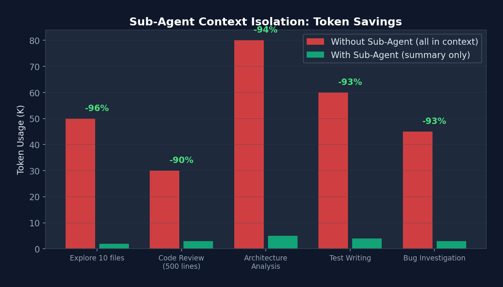
Figure 11-2: Token savings from sub-agent context isolation — In the "exploring 10 files" scenario, operating without sub-agents requires 50K tokens (all retained in context), whereas using sub-agents requires only 2K tokens (summary returned only), yielding a 96% savings. This savings compounds significantly over the course of long conversations.11.7 Task System
// src/Task.ts — Task types
type TaskType =
| 'local_bash' // Bash command execution
| 'local_agent' // Local Agent
| 'remote_agent' // Remote Agent (CCR)
| 'in_process_teammate' // In-process teammate (assistant mode)
| 'local_workflow' // Workflow script
| 'monitor_mcp' // MCP monitoring
| 'dream'; // Dream mode task
interface TaskState {
id: string; // Prefix + 8 random characters (base36)
type: TaskType;
status: 'pending' | 'running' | 'completed' | 'failed' | 'killed';
description: string;
toolUseId?: string;
startTime: number;
endTime?: number;
totalPausedMs: number;
outputFile: string; // Output file on disk
outputOffset: number;
notified: boolean;
}
11.7 Worktree Isolation
Git Worktree Isolation Mode:
├─ Each sub-agent works in an independent git worktree
├─ Prevents file conflicts (multiple agents editing the same file simultaneously)
├─ Tools: EnterWorktreeTool / ExitWorktreeTool
├─ Upon completion:
│ ├─ If changes exist: retain worktree, return path and branch
│ └─ If no changes: automatically clean up worktree
└─ Sandbox integration: worktree path is added to sandbox allowWrite
Chapter 12: Skills & Plugins — The Extension Ecosystem
Tools are atomic operations (read a file, run a command), while Skills are workflows ("help me do a code review," "help me deploy to staging"). If Tools are Lego bricks, Skills are pre-assembled models — you can use them directly or disassemble and recombine them.
The Claude Code Skills system is central to its evolution from a "coding tool" to a "workflow platform." A single
.mdfile can define an entirely new workflow — no TypeScript required, no recompilation needed.
12.1 Skills System
Skills are reusable workflow definitions, analogous to "advanced macros."
Built-in Skills
// src/skills/bundled/index.ts
function initBundledSkills(): void {
registerUpdateConfigSkill(); // /update-config
registerKeybindingsSkill(); // /keybindings-help
registerDebugSkill(); // /debug
registerSimplifySkill(); // /simplify
registerBatchSkill(); // /batch
// Feature-gated Skills
if (feature('AGENT_TRIGGERS_REMOTE')) {
registerScheduleSkill(); // /schedule
}
if (feature('AGENT_TRIGGERS')) {
registerLoopSkill(); // /loop
}
if (feature('BUILDING_CLAUDE_APPS')) {
registerClaudeApiSkill(); // /claude-api
}
}
Custom Skills
<!-- ~/.claude/skills/my-deploy.md -->
---
name: deploy
description: Deploy the application to staging
args: environment
---
# Deploy Skill
When invoked with /deploy <environment>:
1. Run the test suite: `npm test`
2. Build the application: `npm run build`
3. Deploy to the specified environment:
- staging: `aws deploy --env staging`
- production: `aws deploy --env production` (requires confirmation)
4. Verify deployment health check
5. Report results
Skill Loading
// src/skills/loadSkillsDir.ts
function loadSkillsDir(dir: string): SkillDefinition[] {
// 1. Scan the ~/.claude/skills/ directory
// 2. Read each .md file
// 3. Parse frontmatter (name, description, args)
// 4. Create SkillDefinition
// 5. Register as an available command
}
12.2 Deep Dive: The Skill Loading Pipeline
// src/skills/loadSkillsDir.ts — Skill frontmatter parsing
// 25+ frontmatter fields:
// Identity: name, description, version, when_to_use
// Execution: model, disable-model-invocation, user-invocable, context('fork')
// Tools: allowed-tools, disallowed-tools
// Arguments: arguments (array/comma-separated), argument-hint
// Hooks: validated via HooksSchema()
// Paths: parseSkillPaths() (same format as CLAUDE.md rules)
// Two directory formats:
// New format: /skills/skill-name/SKILL.md (one directory per skill)
// Legacy format: /commands/namespace/file.md (flat markdown)
// Legacy namespacing: /commands/auth/login/SKILL.md → "auth:login"
// Security restrictions:
// MCP skills (remote/untrusted) are prohibited from executing inline shell commands
// Local skills can execute shell commands using the `!command` syntax
The
context: 'fork'Mode for Skills: When a skill specifiescontext: 'fork', it executes within a forked sub-agent that possesses its own independent message history and context window. This means the skill's execution does not pollute the main conversation's context — the skill returns only its result text upon completion. This is a manifestation of Context Engineering within the Skills system.
12.3 Built-in Skills Registry
Always loaded (11):
updateConfig, keybindings, verify, debug, loremIpsum,
skillify, remember, simplify, batch, stuck
Feature-gated (7):
dream ← KAIROS/KAIROS_DREAM (background memory consolidation)
hunter ← REVIEW_ARTIFACT
loop ← AGENT_TRIGGERS (loop execution)
schedule ← AGENT_TRIGGERS_REMOTE (remote scheduling)
claudeApi ← BUILDING_CLAUDE_APPS
claudeInChrome← Auto-detected
skillGenerator← RUN_SKILL_GENERATOR
12.4 Plugin System
src/plugins/ — Plugin system core
src/services/plugins/ — Plugin loading, version management, marketplace
src/utils/plugins/ — Plugin utilities, caching
Plugin Features:
├─ Version management (SemVer)
├─ Caching system (reduces repeated loading)
├─ Marketplace integration
├─ Plugin-level Hook injection
├─ Independent data directory (${CLAUDE_PLUGIN_DATA})
└─ Configuration isolation (${user_config.X})
Chapter 13: Building Your Own Harness — A Practical Guide
In the preceding 12 chapters, we dissected Claude Code as a "reference implementation." Now it is time for you to build your own.
Do not attempt to construct a 500,000-line Harness in one go — that represents the culmination of years of effort by dozens of Anthropic engineers. A good Harness grows organically; it is not designed from the top down. Begin with the minimum viable configuration and incrementally add constraints and capabilities as you encounter real problems.
The three levels presented below are not "choose one" options — they represent a progressive path. Spend one hour building Level 1, then use it for a few weeks. Based on real pain points, upgrade to Level 2 and use it for a few months. Only when organizational needs demand it should you consider Level 3.
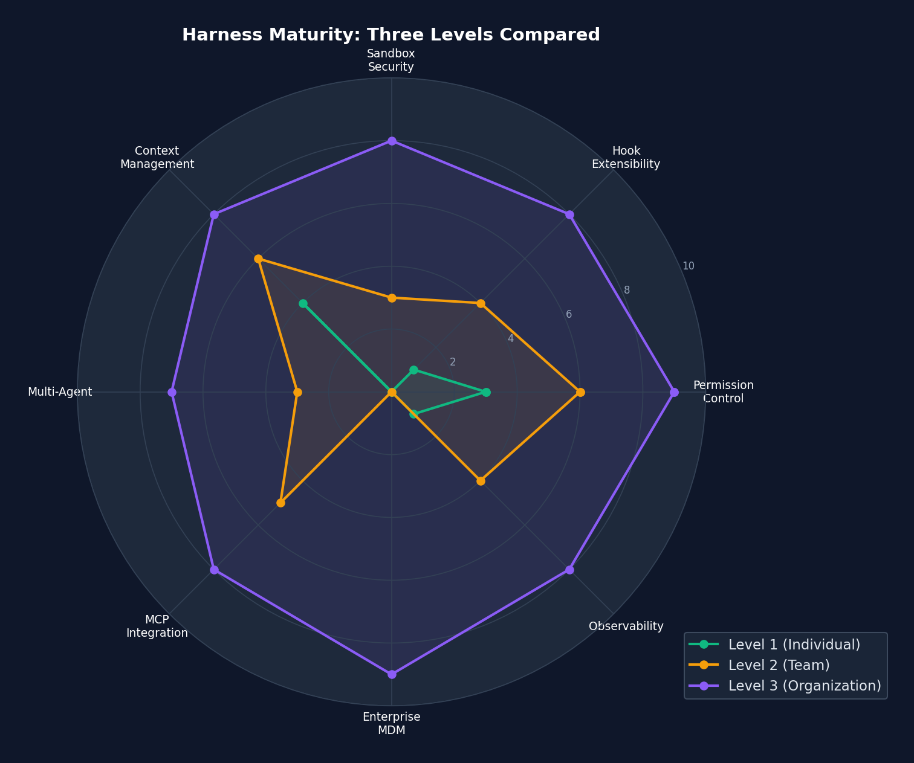
Figure 13-1: Three-tier Harness maturity radar chart — Level 1 (green) provides foundational capabilities in Context Management and Permission Control but lacks Multi-Agent, MCP, and enterprise MDM. Level 3 (purple) approaches maximum scores across all 8 dimensions. Note that Level 2 (yellow) represents the "sweet spot" for most teams — moderate investment with broad coverage.13.1 Level 1: Personal Harness (1-2 Hours)
Step 1: Create CLAUDE.md
# CLAUDE.md
## Project Architecture
- src/: Source code
- tests/: Test files
- docs/: Documentation
## Development Standards
- Language: TypeScript strict mode
- Testing: vitest
- Formatting: prettier
- Commits: conventional commits
## Important Constraints
- Do not modify the migrations/ directory (deployed migrations are immutable)
- All API endpoints must have authentication middleware
- Do not use the any type
Step 2: Configure Basic Permissions
// .claude/settings.json
{
"permissions": {
"allow": [
"Read",
"Glob",
"Grep",
"Bash(npm test *)",
"Bash(npm run *)",
"Bash(git status)",
"Bash(git diff *)",
"Bash(git log *)"
],
"deny": [
"Bash(sudo *)",
"Bash(rm -rf *)",
"Bash(git push --force *)",
"Bash(git reset --hard *)"
]
}
}
Step 3: Add Basic Hooks
// .claude/settings.json (hooks section)
{
"hooks": {
"PreToolUse": [
{
"matcher": "Write",
"hooks": [
{
"type": "command",
"command": "echo 'Writing file: '$(echo $HOOK_INPUT | jq -r '.tool_input.file_path')",
"if": "Write(*.ts)"
}
]
}
],
"PostToolUse": [
{
"matcher": "Bash",
"hooks": [
{
"type": "command",
"command": "npm run lint -- --quiet 2>/dev/null || true",
"if": "Bash(npm *)",
"async": true
}
]
}
]
}
}
13.2 Level 2: Team Harness (1-2 Days)
Step 1: Shared Settings
// .claude/settings.json (committed to git)
{
"permissions": {
"allow": [
"Bash(npm test *)",
"Bash(npm run lint *)",
"Bash(git *)"
],
"deny": [
"Bash(sudo *)",
"Bash(rm -rf /)",
"Bash(npm publish *)",
"Write(*.env*)",
"Write(*.key)",
"Write(*.pem)"
],
"defaultMode": "default"
},
"sandbox": {
"enabled": true,
"fsWrite": {
"deny": [".env", ".env.*", "*.key", "*.pem", "secrets/"]
},
"network": {
"allowedDomains": [
"*.github.com",
"registry.npmjs.org",
"api.anthropic.com"
]
}
}
}
Step 2: Define Team Agents
<!-- .claude/agents/architect.md -->
---
name: architect
description: Reviews architecture decisions and suggests improvements
tools: [Read, Grep, Glob]
model: claude-opus-4-6
maxTurns: 30
---
You are an architecture reviewer. Analyze the codebase and provide:
1. Dependency analysis
2. Coupling/cohesion assessment
3. SOLID principle compliance
4. Suggestions for improvement
Focus on high-level design, not line-by-line code review.
<!-- .claude/agents/test-writer.md -->
---
name: test-writer
description: Writes comprehensive tests for existing code
tools: [Read, Write, Edit, Bash, Glob, Grep]
model: claude-sonnet-4-6
maxTurns: 100
---
You are a test engineer. For any given code:
1. Analyze the code and identify test cases
2. Write comprehensive tests (unit + integration)
3. Run the tests to verify they pass
4. Ensure >80% coverage for touched files
Step 3: Configure MCP Servers
// .claude/mcp.json
{
"mcpServers": {
"github": {
"command": "npx",
"args": ["-y", "@modelcontextprotocol/server-github"],
"env": { "GITHUB_TOKEN": "${GITHUB_TOKEN}" }
},
"postgres": {
"command": "npx",
"args": ["-y", "@modelcontextprotocol/server-postgres"],
"env": { "DATABASE_URL": "${DATABASE_URL}" }
}
}
}
Step 4: Create Team Skills
<!-- .claude/skills/review-pr.md -->
---
name: review-pr
description: Comprehensive PR review workflow
args: pr_number
---
# PR Review Workflow
1. Fetch the PR diff: `gh pr diff $ARGUMENTS`
2. Read all changed files
3. For each file:
- Check for security issues
- Check for performance concerns
- Check for test coverage
- Check for style consistency
4. Generate a structured review comment
5. Post the review: `gh pr review $ARGUMENTS --comment --body "..."`
13.3 Level 3: Organization-Level Harness (1-2 Weeks)
Step 1: Enterprise MDM Settings
// /managed/managed-settings.json
{
"permissions": {
"deny": [
"Bash(sudo *)",
"Bash(curl * | bash)",
"Bash(wget * | bash)",
"Write(*.env*)",
"Write(*.pem)",
"Write(*.key)"
],
"disableBypassPermissionsMode": "disable"
},
"sandbox": {
"enabled": true,
"lockedByPolicy": true,
"network": {
"deniedDomains": ["*.malware.com", "*.phishing.net"]
}
},
"deniedMcpServers": ["*-untrusted", "*-experimental"]
}
Step 2: Audit Hooks
// /managed/managed-settings.d/audit.json
{
"hooks": {
"PostToolUse": [
{
"hooks": [
{
"type": "http",
"url": "https://audit.company.com/api/agent-actions",
"headers": {
"Authorization": "Bearer $AUDIT_API_KEY",
"Content-Type": "application/json"
},
"allowedEnvVars": ["AUDIT_API_KEY"],
"async": true
}
]
}
],
"SessionStart": [
{
"hooks": [
{
"type": "command",
"command": "echo '{\"session_started\": true}' | curl -s -X POST -d @- https://audit.company.com/api/sessions",
"async": true
}
]
}
]
}
}
Step 3: Implement the Plan-Work-Review Loop
Refer to the 13 guard rules from the claude-code-harness project:
R01: Block sudo commands
R02: Prohibit writing to .git/, .env, SSH keys
R03: Prohibit shell writes to protected files
R04: Writing outside the project root requires confirmation
R05: rm -rf requires confirmation
R06: Prohibit git push --force
R07-R09: Mode-specific guards (work/codex/breezing)
R10: Prohibit --no-verify, --no-gpg-sign
R11: Prohibit git reset --hard main/master
R12: Warn on direct pushes to main/master
R13: Warn on editing protected files
Implemented as PreToolUse Hooks:
{
"hooks": {
"PreToolUse": [
{
"matcher": "Bash",
"hooks": [
{
"type": "command",
"command": "node guard-rules.js",
"timeout": 5
}
]
}
]
}
}
}
]
}
]
} }
---
## Chapter 14: Advanced Patterns and Design Philosophy
> This is the final chapter, and also the most important one. In the preceding chapters, we learned "how Claude Code does things." In this chapter, we seek to understand "why it does them this way."
>
> Tools and frameworks become obsolete, but design philosophy endures. If you remember only one chapter from this book, it should be this one — these principles apply to any Agent Harness, not just Claude Code.
### 14.1 The Ten Design Philosophies of Claude Code
#### 1. Async Generator Streaming Architecture
不是: function query() → Promise
为什么: 客户端可以在模型思考时就开始渲染 用户可以随时中断 进度对用户可见
#### 2. State Machine via Continue Sites
不是: 显式状态枚举 + switch/case 而是: while(true) + 7 个 continue 站点
为什么: 恢复路径是自然的（continue = 重试） 状态转换是局部的（只需更新 State 对象） 新恢复路径可以添加而不重构
#### 3. Compile-Time Feature Gating
不是: if (config.feature_x) { ... } 而是: if (feature('FEATURE_X')) { ... } // bun:bundle 编译时求值
为什么: 外部发行版不包含任何内部特性代码（连字符串都没有） 不存在运行时分支预测开销 代码大小最小化
#### 4. Cache Prefix Stability
不是: 将内置工具和 MCP 工具混合排序 而是: 内置工具排序后作为稳定前缀，MCP 工具排序后追加
为什么: Anthropic API 的 prompt cache 基于前缀匹配 MCP 工具变化时，内置工具前缀不变 → 缓存不失效 大幅降低 API 成本
#### 5. Defense in Depth
Layer 1: CLAUDE.md（指导性约束） Layer 2: Permission Rules（声明性约束） Layer 3: Hooks（可编程约束） Layer 4: YOLO Classifier（AI 约束） Layer 5: Sandbox（系统级约束） Layer 6: Hardcoded Denials（不可覆盖约束）
为什么: 每一层都可能被绕过 多层叠加使绕过概率指数下降 最内层（硬编码）无法通过配置禁用
#### 6. Data-Driven Extensibility
不是: 修改源码添加新功能 而是: settings.json + agents/.md + skills/.md + hooks
为什么: 非工程师也能定制 Harness 定制与核心代码解耦 升级时不丢失定制
#### 7. Context as a Scarce Resource
设计: 工具延迟加载、记忆按需附加、四级压缩管道 ToolSearch 发现机制、Microcompact 老化策略
为什么: 上下文窗口有限（即使 1M token） 无关信息降低模型性能 成本与 token 使用量成正比
#### 8. Hierarchical Configuration Override
7 级设置: CLI > Flag > Policy > Managed > Local > Project > User
为什么: 不同层级有不同的信任级别 企业管理员可以强制策略 项目维护者可以设定合理默认 用户可以个人微调
#### 9. Isolated Sub-Agent Context
设计: 子 Agent 从空白消息列表开始 完成后只返回摘要 父级上下文不被污染
为什么: 探索性任务可能产生大量噪音 子 Agent 的失败不应影响父级 Token 预算隔离
#### 10. Reversibility First
设计: 文件编辑通过 Edit（替换字符串），不是 Write（覆盖） 每个工具调用有 undo 能力 自动快照（文件历史）
为什么: Agent 会犯错 用户需要轻松回滚 "先行动后审查"比"先审查后行动"更高效
### 14.2 Entropy Management Patterns
┌──────────────────────────────────────────────┐ │ Entropy Management Patterns │ │ │ │ 1. 定期清理 Agent │ │ /loop 1h "检查死代码、未使用导入、 │ │ 过期 TODO、不一致的命名" │ │ │ │ 2. 文档验证 Agent │ │ SessionEnd Hook → 检查 CLAUDE.md │ │ 是否与代码实际状态一致 │ │ │ │ 3. 依赖审计 Agent │ │ /schedule "每周一 0:00" → │ │ "检查过期依赖、安全漏洞、许可证合规" │ │ │ │ 4. 测试覆盖率守卫 │ │ PostToolUse Hook（Write *.ts）→ │ │ "运行覆盖率检查，如果下降则警告" │ │ │ └──────────────────────────────────────────────┘
### 14.3 Bridge System — IDE Integration
src/bridge/ ├── bridgeMain.ts — 主循环 ├── bridgeMessaging.ts — 消息协议 ├── bridgePermissionCallbacks.ts — 权限处理 ├── replBridge.ts — REPL 桥接 ├── jwtUtils.ts — JWT 认证 └── sessionRunner.ts — 会话执行
支持: ├── VS Code 扩展 ├── JetBrains 扩展 ├── 双向通信（IDE ↔ Claude Code） ├── 权限同步 └── 会话状态同步
### 14.4 Plan Mode V2
5 阶段工作流:
Phase 1: Interview（访谈） ├─ 收集需求 ├─ 理解上下文 └─ 最多启动 3 个 Explore Agent（并行）
Phase 2: Design（设计） ├─ 启动 Plan Agent ├─ 生成实现方案 └─ 可启动多个以探索不同方向
Phase 3: Review（审查） ├─ 读取关键文件验证方案 ├─ 确保与用户意图一致 └─ 通过 AskUserQuestion 澄清
Phase 4: Final Plan（最终计划）
├─ 写入 ~/.claude/plans/
Phase 5: Exit Plan Mode ├─ 调用 ExitPlanMode ├─ 等待用户批准 └─ 批准后开始执行
### 14.5 Remote Triggers and Cron Scheduling
```typescript
// 特性门控: AGENT_TRIGGERS + AGENT_TRIGGERS_REMOTE
// ScheduleCronTool — 创建定时 Agent
{
schedule: "0 9 * * MON", // 每周一早 9 点
prompt: "Review open PRs and post summary to Slack",
model: "claude-sonnet-4-6",
}
// RemoteTriggerTool — 远程触发
{
trigger: "deploy-check",
prompt: "Verify deployment health",
}
14.6 Voice Integration
src/voice/ — 语音输入
src/services/voice.ts — 语音/STT 集成
src/services/voiceStreamSTT.ts — 流式语音转文字
特性门控: VOICE_MODE
支持:
├── 语音输入转文字
├── 流式处理（边说边识别）
└── 集成到主查询循环
14.7 The "Rippable Harness" Principle
核心理念: Harness 应该能随模型能力提升而简化
示例:
├── 今天: 需要 13 条防护规则阻止危险操作
│ └── 未来更好的模型可能不需要其中一半
│
├── 今天: 四级压缩管道应对有限上下文
│ └── 未来更大的上下文窗口可能只需要一级
│
├── 今天: YOLO 分类器需要两阶段检查
│ └── 未来主模型可能自带更好的安全意识
│
└── 设计启示:
├── 每个 Harness 组件应该可以独立禁用
├── 设置覆盖优于硬编码
├── 随着模型改进，简化而非堆叠
└── "最好的 Harness 是你最终不需要的那个"
Appendix C: Complete Type Definition of ToolUseContext
ToolUseContext is the "request context" that permeates the entire execution pipeline — understanding it is tantamount to understanding the information flow of the Harness:
// src/Tool.ts — 真实代码（精简注释版）
export type ToolUseContext = {
// ===== 配置（只读）=====
options: {
commands: Command[] // 可用的 Slash 命令
debug: boolean // 调试模式
mainLoopModel: string // 主循环使用的模型
tools: Tools // 可用工具列表
verbose: boolean // 详细输出
thinkingConfig: ThinkingConfig// 思考模式配置
mcpClients: MCPServerConnection[] // MCP 服务器连接
mcpResources: Record<string, ServerResource[]> // MCP 资源
isNonInteractiveSession: boolean // 非交互式会话
agentDefinitions: AgentDefinitionsResult // Agent 定义
maxBudgetUsd?: number // 最大预算（美元）
customSystemPrompt?: string // 自定义系统提示
appendSystemPrompt?: string // 追加系统提示
querySource?: QuerySource // 查询来源标识
refreshTools?: () => Tools // 工具列表刷新函数
}
// ===== 控制 =====
abortController: AbortController // 取消信号
messages: Message[] // 当前消息历史
// ===== 状态读写 =====
readFileState: FileStateCache // 文件状态缓存
getAppState(): AppState // 获取应用状态
setAppState(f: (prev) => AppState): void // 更新应用状态
// ===== 回调 =====
setToolJSX?: SetToolJSXFn // 设置工具 UI
addNotification?: (n: Notification) => void // 添加通知
sendOSNotification?: (opts) => void // 发送系统通知
setInProgressToolUseIDs: (f) => void // 跟踪进行中的工具
setResponseLength: (f) => void // 跟踪响应长度
updateFileHistoryState: (updater) => void // 更新文件历史
updateAttributionState: (updater) => void // 更新归因状态
// ===== Agent 相关 =====
agentId?: AgentId // Agent 标识
agentType?: string // Agent 类型
requireCanUseTool?: boolean // 是否需要权限检查
// ===== 动态 Skill/Memory =====
nestedMemoryAttachmentTriggers?: Set<string> // 嵌套记忆触发器
loadedNestedMemoryPaths?: Set<string> // 已加载的记忆路径
dynamicSkillDirTriggers?: Set<string> // 动态 Skill 目录触发器
discoveredSkillNames?: Set<string> // 已发现的 Skill 名称
// ===== 权限 =====
localDenialTracking?: DenialTrackingState // 本地拒绝跟踪
toolDecisions?: Map<string, {...}> // 工具决策记录
contentReplacementState?: ContentReplacementState // 内容替换状态
// ===== 高级 =====
requestPrompt?: (sourceName, summary?) => // Hook prompt 请求
(request: PromptRequest) => Promise<PromptResponse>
handleElicitation?: (serverName, params, signal) => // MCP elicitation
Promise<ElicitResult>
onCompactProgress?: (event) => void // 压缩进度回调
criticalSystemReminder_EXPERIMENTAL?: string // 关键系统提醒
}
Design Analysis: ToolUseContext is a large context object, analogous to a Request object in web frameworks. It carries everything required for tool execution — configuration, state, callbacks, and permissions. Although the 50+ fields may appear complex, this design avoids: 1. Global state (each query possesses its own context) 2. Parameter explosion (no need to pass arguments individually) 3. Tight coupling (each tool accesses only the fields it requires)
Appendix D: Reference Model for the 13 Guardrail Rules
The claude-code-harness project defines 13 declarative guardrail rules, implemented as PreToolUse Hooks:
// 来自 claude-code-harness/core/src/guardrails/
// R01: 阻止 sudo — 永远不允许提权
{ rule: 'R01', test: (input) => /^sudo\s/.test(input.command),
action: 'deny', reason: 'sudo commands are not allowed' }
// R02: 禁止写入敏感路径
{ rule: 'R02', test: (input) => SENSITIVE_PATHS.some(p => input.file_path?.startsWith(p)),
action: 'deny', paths: ['.git/', '.env', '~/.ssh/'] }
// R03: 禁止 Shell 写入受保护文件
{ rule: 'R03', test: (input) => isShellWriteToProtectedFile(input),
action: 'deny' }
// R04: 项目根目录外写入需确认
{ rule: 'R04', test: (input) => !isWithinProjectRoot(input.file_path),
action: 'ask', reason: 'Writing outside project root' }
// R05: rm -rf 需确认
{ rule: 'R05', test: (input) => /rm\s+(-rf|-r\s+-f|-f\s+-r)/.test(input.command),
action: 'ask', reason: 'Recursive delete detected' }
// R06: 禁止 force push
{ rule: 'R06', test: (input) => /git\s+push\s+.*--force/.test(input.command),
action: 'deny', reason: 'Force push is not allowed' }
// R07-R09: 模式特定防护
{ rule: 'R07', mode: 'work', ... } // Work 模式限制
{ rule: 'R08', mode: 'codex', ... } // Codex 集成限制
{ rule: 'R09', mode: 'breezing', ... } // Breezing 模式限制
// R10: 禁止跳过安全钩子
{ rule: 'R10', test: (input) => /--no-verify|--no-gpg-sign/.test(input.command),
action: 'deny', reason: 'Skipping safety hooks is not allowed' }
// R11: 禁止 hard reset 到 main
{ rule: 'R11', test: (input) => /git\s+reset\s+--hard\s+(main|master)/.test(input.command),
action: 'deny' }
// R12: 警告直接推送到 main
{ rule: 'R12', test: (input) => isDirectPushToMain(input),
action: 'warn' }
// R13: 警告编辑受保护文件
{ rule: 'R13', test: (input) => PROTECTED_FILES.includes(input.file_path),
action: 'warn', files: ['package-lock.json', 'yarn.lock', 'Cargo.lock'] }
These rules can be implemented entirely using Claude Code's native Hook system:
{
"hooks": {
"PreToolUse": [
{
"matcher": "Bash",
"hooks": [{
"type": "command",
"command": "node guard-rules.js",
"if": "Bash(sudo *)"
}]
}
]
}
}
Chapter 15: Building a Mini Harness from Scratch (Hands-on Tutorial)
In the preceding 14 chapters, we dissected the 512K lines of Claude Code source code. Now it is time to get hands-on — we will build a 200-line Mini Harness in Python from scratch, implementing the core design patterns of Claude Code.
15.1 Objective: A Minimal Harness Running in 30 Minutes
#!/usr/bin/env python3
"""mini_harness.py — 一个 200 行的 Claude Code 式 Agent Harness"""
import anthropic, json, os, subprocess, re
from pathlib import Path
client = anthropic.Anthropic()
MODEL = "claude-sonnet-4-6"
# ====================================================
# Layer 1: Tool System (对应 Claude Code 的 src/Tool.ts)
# ====================================================
TOOLS = [
{
"name": "bash",
"description": "Run a shell command. Returns stdout and exit code.",
"input_schema": {
"type": "object",
"properties": {
"command": {"type": "string", "description": "The command to run"}
},
"required": ["command"]
}
},
{
"name": "read_file",
"description": "Read a file and return its contents.",
"input_schema": {
"type": "object",
"properties": {
"path": {"type": "string", "description": "File path to read"}
},
"required": ["path"]
}
},
{
"name": "write_file",
"description": "Write content to a file.",
"input_schema": {
"type": "object",
"properties": {
"path": {"type": "string", "description": "File path to write"},
"content": {"type": "string", "description": "Content to write"}
},
"required": ["path", "content"]
}
}
]
# ====================================================
# Layer 2: Permission Rules (对应 Claude Code 的 permissions.ts)
# ====================================================
DENY_PATTERNS = [
r"^sudo\s", # R01: 禁止 sudo
r"rm\s+-rf\s+/", # R05: 禁止 rm -rf /
r"git\s+push\s+--force", # R06: 禁止 force push
]
ALLOW_TOOLS = {"read_file"} # 只读工具始终允许
def check_permission(tool_name: str, tool_input: dict) -> tuple[bool, str]:
"""Layer 2: 权限检查 (简化版 hasPermissionsToUseTool)"""
if tool_name in ALLOW_TOOLS:
return True, "allowed by rule"
if tool_name == "bash":
cmd = tool_input.get("command", "")
for pattern in DENY_PATTERNS:
if re.search(pattern, cmd):
return False, f"denied: matches {pattern}"
# 默认：询问用户（对应 Claude Code 的 'ask' 模式）
answer = input(f" Allow {tool_name}({json.dumps(tool_input)[:80]})? [y/n] ")
return answer.lower() == 'y', "user decision"
# ====================================================
# Layer 3: Tool Execution (对应 Claude Code 的 toolExecution.ts)
# ====================================================
def execute_tool(tool_name: str, tool_input: dict) -> str:
"""Layer 3: 执行工具"""
if tool_name == "bash":
result = subprocess.run(
tool_input["command"], shell=True,
capture_output=True, text=True, timeout=30
)
return f"exit_code={result.returncode}\n{result.stdout}{result.stderr}"
elif tool_name == "read_file":
return Path(tool_input["path"]).read_text()
elif tool_name == "write_file":
Path(tool_input["path"]).write_text(tool_input["content"])
return f"Written to {tool_input['path']}"
return "Unknown tool"
# ====================================================
# Layer 4: Context Engineering (对应 Claude Code 的 CLAUDE.md)
# ====================================================
def load_context() -> str:
"""Layer 4: 加载 CLAUDE.md 上下文"""
claude_md = Path("CLAUDE.md")
if claude_md.exists():
return f"\n<project_context>\n{claude_md.read_text()}\n</project_context>\n"
return ""
SYSTEM_PROMPT = f"""You are a coding assistant. Use tools to help the user.
Be concise. Don't explain what you're about to do — just do it.
{load_context()}"""
# ====================================================
# Layer 5: Agent Loop (对应 Claude Code 的 query.ts)
# ====================================================
def agent_loop():
"""Layer 5: 核心 Agent 循环"""
messages = []
print("Mini Harness (type 'exit' to quit)")
while True:
user_input = input("\n> ")
if user_input.lower() == 'exit':
break
messages.append({"role": "user", "content": user_input})
# 内循环：工具调用链（对应 queryLoop 的 while(true)）
while True:
response = client.messages.create(
model=MODEL, max_tokens=4096,
system=SYSTEM_PROMPT,
messages=messages, tools=TOOLS,
)
# 收集助手消息
messages.append({"role": "assistant", "content": response.content})
# 无工具调用 → 打印文本并退出内循环
if response.stop_reason != "tool_use":
for block in response.content:
if hasattr(block, 'text'):
print(f"\n{block.text}")
break
# 执行工具调用
tool_results = []
for block in response.content:
if block.type != "tool_use":
continue
# 权限检查（Layer 2）
allowed, reason = check_permission(block.name, block.input)
if not allowed:
tool_results.append({
"type": "tool_result",
"tool_use_id": block.id,
"content": f"Permission denied: {reason}",
"is_error": True,
})
print(f" ✗ {block.name} denied: {reason}")
continue
# 执行工具（Layer 3）
try:
result = execute_tool(block.name, block.input)
tool_results.append({
"type": "tool_result",
"tool_use_id": block.id,
"content": result,
})
print(f" ✓ {block.name} completed")
except Exception as e:
tool_results.append({
"type": "tool_result",
"tool_use_id": block.id,
"content": f"Error: {e}",
"is_error": True,
})
messages.append({"role": "user", "content": tool_results})
if __name__ == "__main__":
agent_loop()
15.2 Running Your Mini Harness
# 1. 设置 API key
export ANTHROPIC_API_KEY="sk-ant-..."
# 2. 创建一个 CLAUDE.md
echo "# Project Rules
- Use TypeScript for all new files
- Run tests after making changes: npm test" > CLAUDE.md
# 3. 运行
python mini_harness.py
# 4. 测试权限系统
> run sudo rm -rf /
✗ bash denied: matches ^sudo\s
> read the file package.json
✓ read_file completed (自动允许，无需确认)
> run npm test
Allow bash({"command": "npm test"})? [y/n] y
✓ bash completed
15.3 Comparison with Claude Code's Design Patterns
| Mini Harness (200 lines) | Claude Code (512K lines) | Where the Gap Lies |
|---|---|---|
| 3 tools | 43+ tools | Number of tools |
| Regex-based permissions | 7-level hierarchy + AI classifier | Permission granularity |
| User y/n confirmation | 5 modes + Hook system | Flexibility |
| No compaction | Four-level compaction pipeline | Long conversation support |
| No sub-agents | 5 agent types | Complex task decomposition |
| Static CLAUDE.md loading | Memory system + dynamic injection | Context management |
| No retries | 7 continue sites | Robustness |
Exercise: Try adding the following features to the Mini Harness (each approximately 20 lines of code): 1. A simple Hook system: Run shell scripts before and after tool execution 2. A token counter: Track the token consumption and cumulative cost of each API call 3. Session save/restore: Serialize messages to a JSON file with
--resumesupport 4. Sub-agents: Add anagenttool that forks a new agent_loop() with an independent message list
Chapter 16: Competitive Landscape Analysis
Claude Code is not the only AI coding agent. Understanding the Harness designs of competing products helps distinguish which patterns are universal and which are innovations unique to Claude Code.
16.1 Harness Architecture Comparison of the Three Major Agents
| Dimension | Claude Code | Cursor | GitHub Copilot |
|---|---|---|---|
| Runtime Environment | Terminal CLI | VS Code fork | VS Code extension |
| Interaction Mode | Autonomous Agent | Collaborative editor | Reactive autocomplete + Agent Mode |
| Agent Loop | while(true) + 7 continue sites | Not publicly documented | Not publicly documented |
| Tool System | 43+ built-in + MCP extensions | Built-in editing + terminal | Built-in editing + terminal |
| Permission Model | 5 modes + 7-level rules + AI classifier | Editor-level sandbox | GitHub permissions |
| Hook System | 26 events x 4 types | Not publicly documented | Not publicly documented |
| Context Management | CLAUDE.md + memory + four-level compaction | .cursorrules + codebase indexing | .github/copilot-instructions.md |
| Multi-Agent | 5 agent types + Swarm orchestration | 8 parallel agents (worktree) | Single agent |
| MCP Support | 6 transport protocols | MCP support | Limited |
| Open-Source Visibility | Source code analyzable (512K LOC) | Closed source | Closed source |
| Evaluation Integration | SWE-bench + Headless Profiler | Not publicly documented | Not publicly documented |
| Market Share (2026) | 41% | ~15% | 38% |
Data sources: dev.to/raxxostudios, faros.ai, tech-insider.org
16.2 Analysis of Key Design Differences
Innovations Unique to Claude Code: 1. Compile-time feature gating (bun:bundle dead code elimination) — no competitor employs this mechanism 2. Six-layer defense-in-depth security model — the deepest security layering among all agents 3. Two-stage YOLO classifier — the only agent that uses an independent AI to review permissions 4. Reversible tool design (Edit uses string replacement rather than overwriting) — reduces the risk of destructive changes 5. Prompt cache stability sorting — tool ordering optimized for cache hit rates
Innovations Unique to Cursor: 1. Codebase indexing (global semantic understanding) — Claude Code relies on Grep/Glob 2. 8 parallel agents + worktree isolation — a more aggressive parallelization strategy 3. Editor-native integration — superior diff preview and inline editing experience
Universal Patterns (Shared Across All Competitors): 1. Project-level configuration files (CLAUDE.md / .cursorrules / copilot-instructions.md) 2. Tool-calling loops (ReAct pattern) 3. Permission confirmation mechanisms 4. MCP protocol support (gradually converging)
16.3 Architectural Insights from the OpenDev Paper
arXiv:2603.05344v1 "Building AI Coding Agents for the Terminal" proposes several important architectural patterns:
- Scaffolding vs. Harness Separation:
- Scaffolding = assembly prior to the first prompt (system prompt compilation, tool schema generation)
- Harness = everything after assembly (ReAct loop, tool dispatch, secure execution)
-
Claude Code's
main.tsx(parallel prefetching) corresponds to Scaffolding;query.ts(queryLoop) corresponds to the Harness -
Dual-Mode via Sub-Agents Rather Than State Machines:
- The paper finds that state machine patterns (Plan Mode <-> Execute Mode switching) are prone to getting stuck
- The recommended approach: Plan Mode as a tool-restricted sub-agent rather than a state toggle
-
Claude Code's Plan Mode follows precisely this design —
EnterPlanModeToolmodifies the available tool set -
Defense-in-Depth: Five Layers vs. Claude Code's Six:
- The paper proposes five layers (Prompt -> Schema -> Runtime Approval -> Tool Validation -> Lifecycle Hooks)
-
Claude Code adds a sixth layer: hardcoded denials (non-configurable, non-bypassable)
-
Context Pressure as a Central Design Constraint:
- The paper argues that token budget drives all downstream architectural decisions
- Claude Code's four-level compaction pipeline, lazy tool loading, and memory prefetching all serve this constraint
Conclusion: From Reader to Builder
Congratulations on reaching this point. If you have carefully digested the content of the preceding 14 chapters, you now possess more Harness Engineering knowledge than the majority of AI engineers.
Let us summarize the entire book in three sentences:
-
The agent is not the product; the Harness is. Models will be replaced, but the permission rules, Hook pipelines, and sandbox configurations you have carefully designed — these constitute your competitive moat.
-
Constraints are power, not limitations. Each precisely crafted permission rule you add enables you to confidently let the agent do more. The six layers of defense in depth allow Claude Code to execute dangerous commands such as
rmandgit pushin production environments — because every layer stands guard. -
Build incrementally; do not over-engineer. Start by spending one hour assembling a Level 1 Harness with CLAUDE.md and basic permissions. Add Hooks when you encounter pain points. Configure MCP and custom agents when team collaboration becomes necessary. The best Harness is one that is "just sufficient."
A final thought experiment: Claude Code comprises 512,664 lines of code, yet the core of its Agent Loop is merely a single
while(true)and a single State object. The remaining 99.9% of the code all answers the same question — "How do we make this loop run reliably in the real world?" This is the entire significance of Harness Engineering.
Now, go build your own Harness.
Appendix A: Claude Code Source File Index
Core Engine
| File | Size | Purpose |
|---|---|---|
src/main.tsx |
803 KB | Entry point, CLI bootstrapping, parallel prefetching |
src/query.ts |
68 KB | Core Agent loop (queryLoop) |
src/QueryEngine.ts |
46 KB | LLM query engine, system prompt construction |
src/Tool.ts |
29 KB | Tool base interface, 60+ methods |
src/tools.ts |
25 KB | Tool registry, pool assembly, cache stability |
src/Task.ts |
3.2 KB | Task type definitions |
src/commands.ts |
25 KB | Command registry, conditional imports |
Permissions and Security
| File | Purpose |
|---|---|
src/utils/permissions/permissions.ts |
Main permission logic, decision pipeline |
src/types/permissions.ts |
Permission type definitions (13 KB) |
src/utils/permissions/permissionsLoader.ts |
Loading rules from settings |
src/utils/permissions/denialTracking.ts |
Denial tracking |
src/utils/permissions/yoloClassifier.ts |
Auto mode classifier |
src/utils/sandbox/sandbox-adapter.ts |
Sandbox adapter (985 lines) |
src/tools/BashTool/shouldUseSandbox.ts |
Sandbox decision logic |
Hooks
| File | Purpose |
|---|---|
src/utils/hooks.ts |
Hook execution engine |
src/utils/hooks/hooksConfigManager.ts |
Hook configuration management |
src/utils/hooks/hooksSettings.ts |
Hook settings loading |
src/schemas/hooks.ts |
Zod schema definitions |
src/types/hooks.ts |
Hook type definitions |
src/services/tools/toolHooks.ts |
Tool-specific Hook execution |
Settings and Configuration
| File | Purpose |
|---|---|
src/utils/settings/settings.ts |
Core settings management |
src/utils/settings/types.ts |
Settings schema definitions (600+ lines) |
src/utils/settings/settingsCache.ts |
In-memory cache |
src/utils/settings/permissionValidation.ts |
Permission rule validation |
MCP
| File | Purpose |
|---|---|
src/services/mcp/client.ts |
MCP client, 6 transport types |
src/services/mcp/config.ts |
MCP configuration loading |
src/skills/mcpSkills.ts |
MCP Skills discovery |
Agents and Tasks
| File | Purpose |
|---|---|
src/tools/AgentTool/ |
Sub-agent spawning |
src/tools/AgentTool/forkSubagent.ts |
Implicit forking |
src/tools/AgentTool/agentMemory.ts |
Agent memory |
src/coordinator/ |
Multi-agent orchestration |
src/utils/swarm/ |
Swarm coordination logic |
Memory
| File | Purpose |
|---|---|
src/memdir/memoryScan.ts |
Memory scanning |
src/memdir/memoryTypes.ts |
Memory type definitions |
src/services/extractMemories/ |
Automatic memory extraction |
src/services/teamMemorySync/ |
Team memory synchronization |
State and UI
| File | Purpose |
|---|---|
src/state/AppState.tsx |
Main React context (23 KB) |
src/state/AppStateStore.ts |
Zustand-like store (21 KB) |
src/cli/print.ts |
Rich text printing (212 KB) |
src/components/App.tsx |
Root component |
Appendix B: Reference Resources
Open-Source Projects
| Project | Description | URL |
|---|---|---|
| learn-claude-code | 12-lesson Harness Engineering course | github.com/shareAI-lab/learn-claude-code |
| claude-code-harness | Plan->Work->Review loop implementation | github.com/Chachamaru127/claude-code-harness |
| your-claude-engineer | Agent Harness demo (Slack+GitHub+Linear) | github.com/coleam00/your-claude-engineer |
Recommended Learning Path
第 1 周: 基础
├── 阅读本教程第 1-3 章
├── 搭建 Level 1 个人 Harness（CLAUDE.md + 基本权限）
├── 动手实验: 在自己的项目中使用 Claude Code
└── 理解: Agent Loop, Tool Dispatch, 计划模式
第 2 周: 约束与安全
├── 阅读本教程第 4-7 章
├── 配置 Permission Rules
├── 编写 PreToolUse Hook
└── 理解: Permission Model, Hooks, Sandbox
第 3 周: 上下文与记忆
├── 阅读本教程第 8-9 章
├── 优化 CLAUDE.md
├── 配置 Settings 层级
├── 动手实验: 写一个 PreToolUse Hook
└── 理解: Context Engineering, Memory, Compaction
第 4 周: 扩展与协作
├── 阅读本教程第 10-12 章
├── 配置 MCP 服务器（从 GitHub MCP 开始）
├── 创建自定义 Agent 和 Skill
└── 理解: MCP, Sub-Agents, Skills
第 5 周: 多 Agent 与生产化
├── 阅读本教程第 13-14 章
├── 搭建团队 Harness
├── 实现 Plan→Work→Review 循环
└── 理解: Team Protocols, Worktree Isolation, Entropy Management
第 6 周+: 高级
├── 深入研究 Claude Code 源码（从 query.ts 开始）
├── 构建组织级 Harness
└── 探索: Bridge, Voice, Remote Triggers
Quick Reference for Key Concepts
| Concept | One-Sentence Definition |
|---|---|
| Harness | All infrastructure outside the agent itself |
| Agent Loop | The core cycle of message -> LLM -> tool -> loop |
| Tool | A standardized interface for the agent to interact with the external world |
| Permission Mode | A mode determining the degree of agent autonomy (5 types) |
| Permission Rule | A declarative allow/deny/ask rule |
| Hook | A programmable callback on lifecycle events (4 types) |
| Sandbox | System-level restrictions on files, network, and processes |
| CLAUDE.md | A project-level persistent context file |
| Memory | Structured cross-session memory (4 types) |
| Compaction | A context window compression strategy (4 levels) |
| MCP | Model Context Protocol, extending Harness capabilities |
| Sub-Agent | A context-isolated child agent |
| Skill | A reusable workflow definition |
| Plan Mode | A five-phase planning workflow |
| Worktree | Git worktree isolation to prevent parallel conflicts |
| Entropy Management | Combating system degradation through periodic maintenance |
| Feature Gate | Compile-time feature toggle (bun:bundle) |
| Prompt Cache | An API caching strategy optimized by tool ordering |
| YOLO Classifier | A two-stage AI-based automatic permission approval system |
| Defense in Depth | Six layers of security protection stacked together |
"Build rippable harnesses — the best harness is the one you eventually don't need."
This tutorial is based on reverse engineering of the Claude Code source code (2026-03-31 snapshot). All referenced file paths and code patterns are derived from actual source code analysis.
References
[1] Martin Fowler. "Harness Engineering." martinfowler.com/articles/exploring-gen-ai/harness-engineering.html, 2026.
[2] OpenAI. "Harness Engineering: Leveraging Codex in an Agent-First World." openai.com/index/harness-engineering/, 2026.
[3] "Building AI Coding Agents for the Terminal: Scaffolding, Harness, Context Engineering, and Lessons Learned." arXiv:2603.05344v1, 2026.
[4] "Evaluation and Benchmarking of LLM Agents: A Survey." arXiv:2507.21504v1, 2025.
[5] Jimenez et al. "SWE-bench: Can Language Models Resolve Real-World GitHub Issues?" ICLR, 2024.
[6] NxCode. "Harness Engineering: The Complete Guide to Building Systems That Make AI Agents Actually Work." nxcode.io, 2026.
[7] Phil Schmid. "The Importance of Agent Harness in 2026." philschmid.de/agent-harness-2026, 2026.
[8] Epsilla. "Harness Engineering: Why the Focus is Shifting from Models to Agent Control Systems." epsilla.com/blogs, 2026.
[9] EleutherAI. "lm-evaluation-harness: A Framework for Few-Shot Evaluation of Language Models." github.com/EleutherAI/lm-evaluation-harness, 2024.
[10] Harness Engineering Academy. "What is Harness Engineering? A Complete Introduction." harnessengineering.academy/blog, 2026.
Last updated: 2026-04-01